Kiến thức (S1)
Màn Kiến thức (S1) nằm trong từng khoá học của role CD, dùng để định nghĩa toàn bộ kiến thức của khoá theo từng loại: Từ vựng, Ngữ pháp, Mẫu câu, Hán tự (Hanzi), Kanji, Bảng chữ, Phát âm — chỉ hiện các loại đúng với ngôn ngữ của trung tâm (mỗi trung tâm dạy 1 ngôn ngữ). Dữ liệu theo trung tâm CD đang chọn ở header (CD và Giáo viên được chia theo trung tâm). Mỗi mục kiến thức là bản ghi của Thư viện dữ liệu: S1 tham chiếu bản ghi thư viện; thêm mới hoặc sửa tại S1 ghi thẳng vào thư viện. Kiến thức chỉ được sửa tại S1; Chi tiết bài học chỉ thêm / gỡ kiến thức đã có trong S1.
Ảnh là Figma
CD-KH-030400→CD-KH-030540vàCD-KH-030270. Những chỗ chưa có thiết kế được ghi rõ là UI cần bổ sung ngay tại khu vực tương ứng. Bản đồ field ↔ cột sheet dữ liệu gốc: xem Phụ lục A.
1. UI
Khung màn hình và tab loại kiến thức
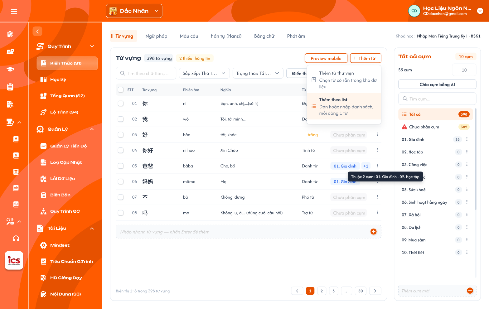
Kiến thức (S1) — tab Từ vựng, menu Thêm từ đang mở — nhấn để xem ảnh gốc

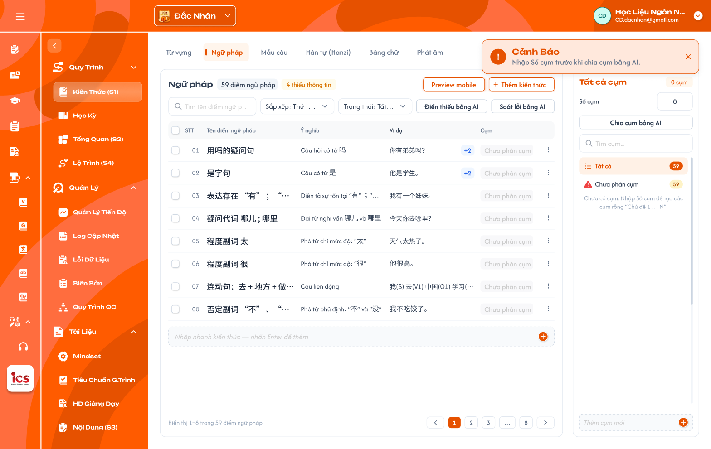
Tab Ngữ pháp: bảng dùng cột Cụm; chưa có cụm thì panel gợi ý nhập Số cụm — nhấn để xem ảnh gốc

Mô tả:
- CD chọn trung tâm ở header (
Switch Center), vào khoá học, chọnKiến thức (S1)trong menu của khoá để xem và định nghĩa kiến thức của khoá học đó. - Mỗi loại kiến thức là một tab riêng ở đầu màn; tab chỉ hiện các loại áp dụng cho ngôn ngữ của trung tâm đang chọn (khoá học không có field ngôn ngữ riêng).
- Mỗi tab gồm: bảng danh sách mục của loại đó (bên trái) và panel Cụm của loại đó (bên phải).
Giải thích thành phần:
| Thành phần | Yêu cầu |
|---|---|
| Switch Center (header) | Trung tâm CD đang làm việc (vd Đắc Nhân); đổi trung tâm thì toàn bộ dữ liệu khoá học và S1 tải lại theo trung tâm mới, kể cả bộ tab và danh sách Từ loại theo ngôn ngữ. |
| Tab loại kiến thức | Mỗi loại 1 tab, thứ tự: Từ vựng, Ngữ pháp, Mẫu câu, Hán tự / Kanji, Bảng chữ, Phát âm. Chỉ hiện các loại theo bảng ngôn ngữ bên dưới. |
| Tiêu đề bảng | Tên loại (hoặc tên cụm đang chọn) + badge số mục (vd 398 từ vựng) + badge số mục thiếu thông tin (vd 2 thiếu thông tin). |
Preview mobile |
Mở panel xem trước trên điện thoại của mục đang chọn (xem khu vực Preview mobile). |
+ Thêm … |
Mở menu thêm mục: Thêm từ thư viện, Thêm theo list. Tên nút theo loại (vd Thêm từ, Thêm kiến thức). |
| Thanh công cụ | Tìm kiếm, Sắp xếp, Trạng thái, Điền thiếu bằng AI, Soát lỗi bằng AI (xem khu vực Bảng danh sách và khu vực AI). |
| Panel Cụm | Danh sách cụm của loại đang mở, Số cụm, Chia cụm bằng AI (xem khu vực Panel Cụm). |
Loại kiến thức theo ngôn ngữ của trung tâm:
| Trung tâm | Ngôn ngữ | Các tab hiển thị |
|---|---|---|
| Đắc Nhân | Tiếng Trung | Từ vựng, Ngữ pháp, Mẫu câu, Hán tự (Hanzi), Phát âm (pinyin) — không có Bảng chữ |
| Sakumi | Tiếng Nhật | Từ vựng, Ngữ pháp, Mẫu câu, Kanji, Bảng chữ (Hiragana / Katakana) — không có Phát âm |
| Saechang | Tiếng Hàn | Từ vựng, Ngữ pháp, Mẫu câu, Bảng chữ (Hangul), Phát âm |
| Creative English / Betreux / Créatis | Tiếng Anh / Đức / Pháp | Từ vựng, Ngữ pháp, Mẫu câu, Bảng chữ (Alphabet), Phát âm |
Điểm cần lưu ý:
- Góc phải thanh tab hiện khoá học đang mở, vd
Khoá học: Nhập Môn Tiếng Trung Kỳ I · HSK1. - Ngôn ngữ lấy theo trung tâm CD đang chọn ở header (Đắc Nhân = Trung, Sakumi = Nhật, Saechang = Hàn, Créatis = Pháp, Creative English = Anh, Betreux = Đức); không suy từ Danh mục hay Cấp độ của khoá.
- Loại không áp dụng cho ngôn ngữ của trung tâm không hiện tab.
- Cột phiên âm dùng chung tên
Phiên âmcho mọi ngôn ngữ (không dùngPinyin). - Bảng chữ và Phát âm giữ đúng cấu trúc dữ liệu app học viên đang dùng (Phụ lục A.6, A.7): tiếng Trung chỉ có
Phát âm (bảng pinyin, file
Phát Âm Final); tiếng Nhật chỉ có Bảng chữ (Hiragana / Katakana). Mỗi loại có dữ liệu và audio riêng, không loại nào lấy dữ liệu của loại kia.
Testcase — Khung màn hình và tab loại kiến thức
| Tên testcase | Priority | Loại test | Scenario | Role | Pre-condition | Given / When / Then | Expected Result |
|---|---|---|---|---|---|---|---|
| Case 1: Mở Kiến thức (S1) của khoá học | High | Smoke | Flow 1 / REQ01 / REQ02 | CD | Đang chọn trung tâm Đắc Nhân; khoá có dữ liệu | Given CD đang ở khoá học When chọn Kiến thức (S1)Then hiển thị tab Từ vựng và danh sách của đúng khoá |
- Có 5 tab theo bảng tiếng Trung - Dữ liệu đúng khoá và trung tâm đang chọn |
| Case 2: Tab theo ngôn ngữ trung tâm | High | REQ02 | CD | CD được gán Đắc Nhân và Sakumi | Given mở S1 của 1 khoá ở từng trung tâm When xem thanh tab Then tab đúng bảng ngôn ngữ |
- Đắc Nhân có Hán tự (Hanzi), Phát âm, không có Kanji, Bảng chữ - Sakumi có Kanji, Bảng chữ (ảnh 17-kanji.png), không có Phát âm |
|
| Case 3: Đổi trung tâm | High | REQ01 | CD | CD được gán 2 trung tâm | Given đang ở S1 trung tâm A When đổi sang trung tâm B ở header Then dữ liệu tải lại theo trung tâm B |
- Không còn dữ liệu của trung tâm A | |
| Case 4: Đổi tab | Medium | Flow 1 / REQ02 | CD | Đang ở tab Từ vựng | Given S1 đang mở When chọn tab Ngữ pháp Then bảng và panel Cụm đổi theo Ngữ pháp |
- Cột bảng đúng field Ngữ pháp - Panel Cụm là cụm của Ngữ pháp |
Field của từng loại kiến thức
Mô tả:
- Mỗi loại có bộ field riêng (theo dữ liệu
HSK1 - DATA, sheetkanjikhoá N5,BẢNG CHỮ - N5 (ver 2.2)vàPhát Âm Final). Không có field Bài học / Khoá học: kiến thức gắn vào khoá qua S1 và gắn vào bài ở Chi tiết bài học. - Mục thiếu thông tin khi trống bất kỳ field bắt buộc nào của loại đó. Field không bắt buộc trống vẫn tính là đủ.
Giải thích field/thành phần:
| Loại | Field bắt buộc | Field không bắt buộc |
|---|---|---|
| Từ vựng | Từ, Phiên âm, Nghĩa, Từ loại, Hán Việt (chỉ tiếng Trung), Ví dụ (≥ 1; mỗi ví dụ gồm câu, phiên âm, nghĩa) | Mở rộng, Audio |
| Ngữ pháp | Tên điểm ngữ pháp, Ý nghĩa, Cấu trúc, Cách dùng, Ví dụ (≥ 1; mỗi ví dụ gồm câu, phiên âm, nghĩa) | Lưu ý, Video, Mở rộng |
| Mẫu câu | Câu, Phiên âm, Nghĩa | Audio |
| Hán tự (Hanzi) | Chữ, Phiên âm, Âm Hán Việt, Nghĩa (ít nhất 1), Bộ thủ, Thành phần, Thứ tự nét | Mẹo nhớ, Chữ giống, Từ liên quan, Nét viết (SVG), Mở rộng |
| Kanji | Chữ, Âm On hoặc Âm Kun (ít nhất 1), Âm Hán Việt, Nghĩa, Bộ thủ, Thành phần | Mẹo nhớ, Từ liên quan, Nét viết (SVG) |
| Phát âm — tiếng Trung (pinyin) | Âm, Loại âm; Nhóm và Hướng dẫn phát âm (khi Loại = Thanh mẫu / Vận mẫu); Thanh mẫu và Vận mẫu thành phần (khi Loại = Âm tiết) | Cách đọc, Âm dễ nhầm, Audio theo thanh, Video hướng dẫn |
| Bảng chữ — tiếng Nhật (Kana) | Chữ, Romaji, Bộ chữ, Bảng con, Vị trí trong bảng | Chữ dễ nhầm, Mẹo nhớ, Từ ví dụ, Audio |
| Bảng chữ — tiếng Hàn, Anh, Đức, Pháp | Cần xác nhận (mục 3) | Cần xác nhận |
| Field | Quy tắc |
|---|---|
| Từ loại | Chọn 1 hoặc nhiều giá trị từ danh sách cố định theo ngôn ngữ (Phụ lục A), không nhập tự do. Mục dạng câu / cụm (vd はじめまして。) vẫn là Từ vựng, nhận biết bằng Từ loại Câu. |
| Phiên âm từng chữ (furigana) | Dạng {chữ|phiên âm}; hệ thống tự sinh từ Từ / Câu và Phiên âm, CD không nhập. |
| Ví dụ | Danh sách ví dụ, mỗi ví dụ gồm câu, phiên âm, nghĩa; tối thiểu 1, thêm bằng + Thêm ví dụ ở Chi tiết mục. Bảng hiện ví dụ đầu, nhiều hơn thì thêm nhãn +N (ảnh 08-ngu-phap.png). Cho phép đánh dấu từ đang học bằng <...> (vd <{你|nǐ}>{好|hǎo}{吗|ma}？). Dữ liệu cũ gộp nhiều ví dụ trong 1 ô thì import tách theo dòng trống. |
| Cách dùng / Lưu ý (Ngữ pháp) | Nội dung nhiều đoạn, có ví dụ kèm phiên âm và nghĩa theo định dạng dữ liệu hiện có. |
| Mở rộng | Không (mặc định) = đẩy lên 3 bước học; Có = không đẩy lên 3 bước nhưng vẫn hiện trong danh sách. |
| Nghĩa (Hán tự) | Một chữ có nhiều nghĩa tiếng Việt; bắt buộc ít nhất 1. |
| Bộ thủ (Kanji, Hán tự) | Chọn 1 bộ trong 214 bộ thủ Khang Hy (có số thứ tự 1–214, chữ bộ, tên Hán Việt, số nét và các biến thể viết như 亻, 氵, 讠, ⺮); dùng chung Hán tự và Kanji; hằng số hệ thống. |
| Chuỗi tìm kiếm (Kanji) | Hệ thống tự sinh từ Âm On / Âm Kun (romaji, kana), CD không nhập. |
| Audio | Không bắt buộc; CD tải file âm thanh. Không có file thì app đọc bằng TTS. |
| Phiên âm | Tiếng Trung: pinyin có dấu thanh (nǐ); tiếng Nhật: romaji (hajimemashite); ngôn ngữ khác theo IPA hoặc cách đọc quy ước của trung tâm. |
| Video (Ngữ pháp) | Link video (vd YouTube), không bắt buộc. |
| Bộ chữ, Bảng con (Bảng chữ Nhật) | Chọn từ danh sách cố định: Bộ chữ Hiragana / Katakana; Bảng con theo bộ chữ (Bảng Chữ Chính, Tenten, Maru, Ảo âm, Ảo âm - hiếm gặp) — Phụ lục A.7. |
| Vị trí trong bảng (Bảng chữ Nhật) | Hàng + cột của chữ trong lưới bảng chữ, định dạng dữ liệu _k_a (hàng k, cột a), ___a (hàng nguyên âm), _kya (ảo âm). |
| Loại âm, Nhóm, Thanh điệu (Phát âm) | Chọn từ danh sách cố định: Loại Thanh mẫu / Vận mẫu / Âm tiết; 12 Nhóm (6 nhóm thanh mẫu, 6 nhóm vận mẫu); 4 thanh ˉ ˊ ˇ ˋ — Phụ lục A.7. |
| Audio (Phát âm) | Audio riêng của Phát âm. Thanh mẫu 1 file; Vận mẫu và Âm tiết mỗi thanh 1 file; tên file theo quy ước app pinyin_<thanh>.mp3 (vd ba_1.mp3), thanh mẫu b.mp3. Không có file thì TTS. |
| Cụm | Không phải field nhập; mục thuộc 0, 1 hoặc nhiều cụm (xem Panel Cụm). |
Điểm cần lưu ý:
- Bảng chỉ hiện field chính của từng tab (xem khu vực Bảng danh sách). Các field còn lại (Hán Việt, Mở rộng, Cách
dùng, Lưu ý, Audio, Thành phần, Thứ tự nét…) nhập / sửa ở drawer
Chi tiết mục(menu dòngMở chi tiết …, xem khu vực Chi tiết mục). - Từ loại và Bộ thủ là hằng số hệ thống, chưa có màn quản lý; danh sách và cách map dữ liệu cũ ở Phụ lục A.
- Ô field bắt buộc đang trống hiển thị
— trống —trên bảng; Preview mobile ghi rõ số field trống (vd1 trường trống · Từ loại). - Badge
N thiếu thông tinvà bộ lọc Trạng thái tính theo field bắt buộc của bảng trên.
Testcase — Field của từng loại kiến thức
| Tên testcase | Priority | Loại test | Scenario | Role | Pre-condition | Given / When / Then | Expected Result |
|---|---|---|---|---|---|---|---|
| Case 5: Tính thiếu thông tin | High | REQ03 | CD | Từ 好 có đủ field trừ Từ loại |
Given tab Từ vựng When xem dòng 好 và badgeThen dòng tính là thiếu |
- Ô Từ loại hiện — trống —- Được đếm vào N thiếu thông tin- Có trong lọc Thiếu thông tin |
|
| Case 6: Field không bắt buộc trống | Medium | REQ03 | CD | Từ đủ field bắt buộc, không có Audio | Given tab Từ vựng When xem trạng thái của từ Then từ tính là đủ thông tin |
- Không đếm vào thiếu thông tin | |
| Case 7: Từ loại chọn từ danh sách | Medium | REQ03 | CD | Đang sửa một từ ở trung tâm Đắc Nhân | Given ô Từ loại đang sửa When nhập giá trị Then chỉ chọn được giá trị trong danh sách tiếng Trung, chọn được nhiều giá trị |
- Không lưu được giá trị gõ tự do - Từ 会 chọn Động từ + Động từ năng nguyện thì cột Từ loại hiện cả 2 |
|
| Case 7a: Ví dụ nhiều mục | Medium | REQ03 | CD | Điểm ngữ pháp có 3 ví dụ | Given tab Ngữ pháp When xem cột Ví dụ Then hiện ví dụ đầu kèm +2 |
- Chi tiết mục liệt kê đủ 3 ví dụ, mỗi ví dụ có câu, phiên âm, nghĩa | |
| Case 8: Kanji cần ít nhất 1 âm | Medium | REQ03 | CD | Khoá tiếng Nhật; chữ Kanji có Âm Kun, không có Âm On | Given tab Kanji When xem trạng thái chữ Then không tính thiếu vì Âm On / Âm Kun |
- Chỉ tính thiếu khi trống cả Âm On và Âm Kun |
Bảng danh sách, tìm kiếm, sắp xếp và lọc
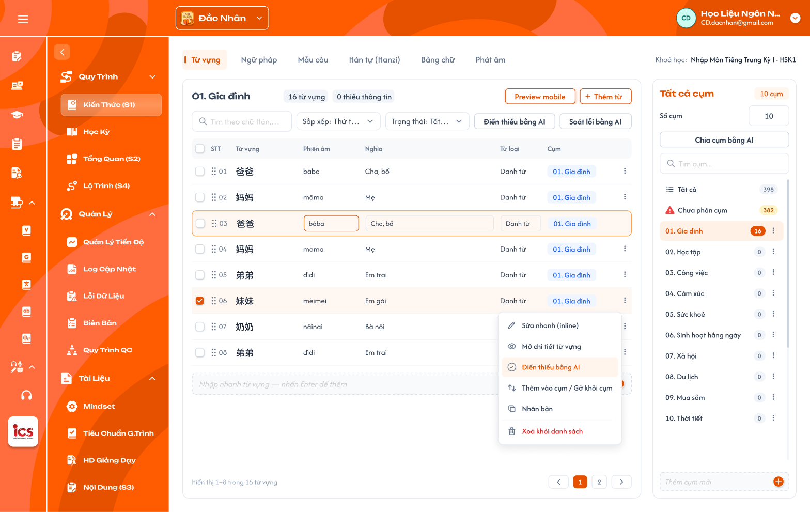
Đang xem cụm `01. Gia đình`, sửa nhanh dòng 03 và menu ⋮ của một dòng — nhấn để xem ảnh gốc

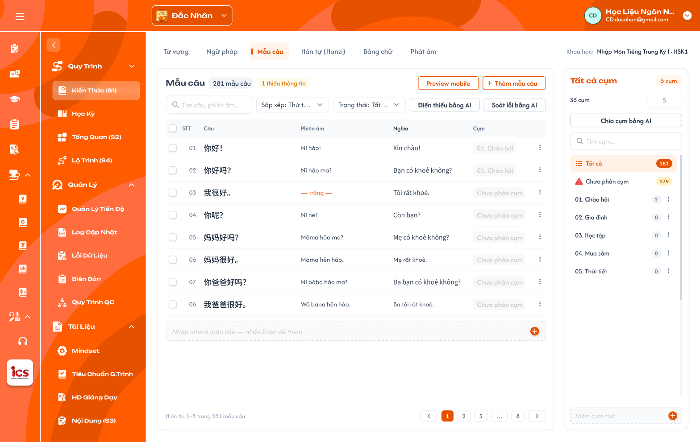
Tab Mẫu câu: cột Câu, Phiên âm, Nghĩa, Cụm — nhấn để xem ảnh gốc

Tab Hán tự (Hanzi): cột Chữ, Phiên âm, Hán Việt, Nghĩa, Bộ thủ, Cụm — nhấn để xem ảnh gốc

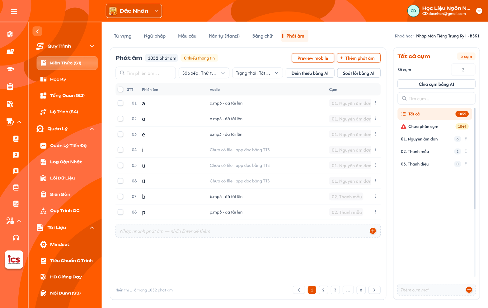
Tab Phát âm: cột Phiên âm, Audio, Cụm — nhấn để xem ảnh gốc

Tab Kanji (trung tâm Sakumi, khoá N5): cột Chữ, Âm On, Âm Kun, Hán Việt, Nghĩa, Cụm — nhấn để xem ảnh gốc

- UI cần sửa: thanh tab ở trung tâm Sakumi (ảnh
17-kanji.png) còn tabPhát âm— tiếng Nhật không có Phát âm. - UI cần sửa: tab Phát âm (ảnh
16-phat-am.png): thanh tab Đắc Nhân cònBảng chữ— tiếng Trung không có Bảng chữ; bảng mới có cột Phiên âm, Audio — cần đủ cột theo bảng pinyin (khu vực Bảng danh sách); badge1052 phát âmlà số dòng sheet HSK1, dữ liệu gộp mỗi âm 1 mục (Phụ lục A.6). - UI cần bổ sung: bảng của tab Bảng chữ tiếng Nhật (lưới kana theo Bảng con, hàng × cột, Phụ lục A.7); dạng lưới
thanh mẫu / vận mẫu theo Nhóm cho tab Phát âm (tham khảo sheet
mẫu UI pinyin, Phụ lục A.6).
Mô tả:
- Bảng liệt kê các mục của loại đang mở trong khoá học; chọn
Tất cảhoặc một cụm ở panel Cụm để lọc theo cụm. - Mỗi tab có bộ cột riêng theo field chính của loại (bảng dưới); cấu trúc toolbar, thanh hàng loạt, Nhập nhanh, phân trang và panel Cụm giống nhau ở mọi tab.
Giải thích thành phần:
| Thành phần | Yêu cầu |
|---|---|
| Checkbox | Chọn dòng để thao tác hàng loạt; checkbox ở header chọn / bỏ chọn các dòng của trang. |
| STT + tay nắm kéo thả | STT theo thứ tự hiển thị; tay nắm chỉ hiện khi đang xem 1 cụm và Sắp xếp = Thứ tự trong cụm. |
| Cột field | Các field chính của loại. Từ vựng: Từ vựng, Phiên âm, Nghĩa, Từ loại · Ngữ pháp: Tên điểm ngữ pháp, Ý nghĩa, Ví dụ · Mẫu câu: Câu, Phiên âm, Nghĩa · Hán tự: Chữ, Phiên âm, Hán Việt, Nghĩa, Bộ thủ · Kanji: Chữ, Âm On, Âm Kun, Hán Việt, Nghĩa · Phát âm (tiếng Trung): Âm, Loại âm, Nhóm, Thanh mẫu, Vận mẫu, Âm dễ nhầm, Audio (tên file · đã tải lên hoặc Chưa có file · app đọc bằng TTS) · Bảng chữ Nhật: Chữ, Romaji, Bảng con, Vị trí, Chữ dễ nhầm · Bảng chữ Hàn / Alphabet: cần xác nhận (mục 3). |
| Cụm | Nhãn cụm đầu tiên của mục, thuộc nhiều cụm thì thêm nhãn +N (N = số cụm còn lại, vd 01. Gia đình +1); không thuộc cụm nào hiện Chưa phân cụm. Hover +N hiện tooltip liệt kê đủ tên cụm (Thuộc 2 cụm: 01. Gia đình · 02. Học tập, ảnh 01-tu-vung.png); bấm +N mở popup Thêm vào cụm / Gỡ khỏi cụm của mục đó. |
| ⋮ | Menu thao tác dòng (xem khu vực Menu thao tác dòng). |
| Tìm kiếm | Tìm theo các field chính của loại (Từ vựng: chữ, phiên âm, nghĩa; Ngữ pháp: tên, ý nghĩa; Hán tự: chữ, phiên âm, Hán Việt; Kanji: chữ, âm On / Kun, nghĩa; Phát âm: âm, thanh mẫu, vận mẫu; Bảng chữ Nhật: chữ, romaji). |
| Sắp xếp | Thứ tự thêm (mặc định), A–Z, Mới cập nhật, Thứ tự trong cụm (chỉ khi đang xem 1 cụm). |
| Trạng thái | Chọn 1: Tất cả, Đủ thông tin, Thiếu thông tin, AI chờ duyệt, AI nghi sai. |
| Phân trang | Hiển thị a–b trong N … và Trước / số trang / Sau; theo UI mỗi trang 8 dòng. |
| Nhập nhanh | Dòng cuối bảng (xem khu vực Nhập nhanh). |
Điểm cần lưu ý:
- Tìm kiếm, Trạng thái, cụm đang chọn kết hợp với nhau; đổi điều kiện thì về trang 1, badge và tổng số cập nhật theo.
- Kéo thả chỉ đổi thứ tự mục trong cụm (dùng khi thêm cụm vào bài học); các kiểu sắp xếp khác chỉ để xem.
- Bảng mọi tab dùng cột
Cụm(không có cộtBài học).
Testcase — Bảng danh sách, tìm kiếm, sắp xếp và lọc
| Tên testcase | Priority | Loại test | Scenario | Role | Pre-condition | Given / When / Then | Expected Result |
|---|---|---|---|---|---|---|---|
| Case 9: Xem danh sách theo cụm | High | Smoke | Flow 1 / REQ11 | CD | Cụm Gia đình có 16 từ |
Given tab Từ vựng When chọn cụm Gia đìnhThen bảng chỉ hiện 16 từ của cụm |
- Tiêu đề Gia đình + 16 từ vựng- Badge thiếu thông tin tính trong cụm |
| Case 10: Tìm kiếm và lọc kết hợp | High | REQ11 | CD | Có từ thiếu và đủ thông tin | Given tab Từ vựng When nhập từ khoá và chọn Thiếu thông tinThen chỉ hiện từ khớp cả hai điều kiện |
- Về trang 1 - Tổng số đúng kết quả lọc |
|
| Case 11: Kéo thả thứ tự trong cụm | Medium | REQ11 | CD | Đang xem 1 cụm, Sắp xếp = Thứ tự trong cụm |
Given bảng của cụm When kéo dòng 3 lên vị trí 1 Then thứ tự trong cụm được lưu |
- Tải lại vẫn giữ thứ tự - Thứ tự ở cụm khác không đổi |
|
| Case 12: Không kéo thả khi sắp xếp khác | Low | REQ11 | CD | Sắp xếp = A–Z |
Given bảng đang sắp xếp A–Z When thử kéo dòng Then không cho kéo |
- Thứ tự đã lưu không đổi | |
Case 12a: Xem đủ cụm của mục qua +N |
Medium | REQ08 / REQ11 | CD | Từ 爸爸 thuộc 2 cụm |
Given cột Cụm hiện 01. Gia đình +1When hover rồi bấm +1Then tooltip liệt kê 2 cụm; bấm mở popup Cụm của 1 mục |
- Popup tick sẵn 2 cụm đang thuộc | |
| Case 12b: Cột bảng theo tab | Medium | REQ02 / REQ03 | CD | Trung tâm Đắc Nhân | Given lần lượt mở tab Mẫu câu, Hán tự, Phát âm When xem header bảng Then cột đúng bảng Cột field |
- Hán tự có cột Bộ thủ, Phát âm có cột Audio |
Menu thêm, Popup Thêm từ thư viện dữ liệu
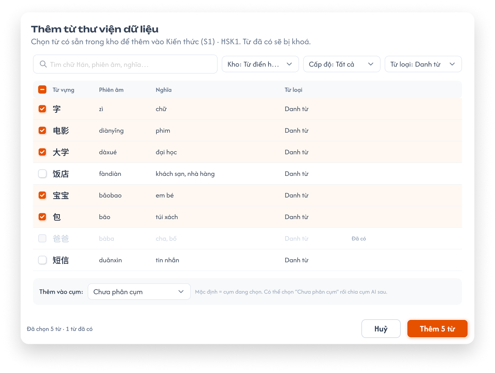
Popup Thêm từ thư viện dữ liệu — nhấn để xem ảnh gốc

Mô tả:
- Nút
+ Thêm …mở menu 2 mục:Thêm từ thư viện(chọn từ có sẵn trong kho dữ liệu) vàThêm theo list. - Popup thư viện cho CD chọn nhiều mục có sẵn trong Thư viện dữ liệu để gắn vào S1 của khoá học. Khoá học tham chiếu bản ghi thư viện, không sao chép.
Giải thích field/thành phần:
| Thành phần | Yêu cầu |
|---|---|
| Tiêu đề / mô tả | Thêm từ thư viện dữ liệu; mô tả ghi khoá đang thêm (vd Kiến thức (S1) · HSK1) và Từ đã có sẽ bị khoá. |
| Tìm kiếm | Tìm theo chữ, phiên âm, nghĩa. |
| Kho | Chọn 1: Tất cả (mặc định), Từ điển (dữ liệu import sẵn theo ngôn ngữ, vd sheet relation của HSK1 / N5), Khoá học (bản ghi tạo từ S1 của các khoá trong trung tâm; dòng hiện tên khoá gốc). |
| Cấp độ, Từ loại | Lọc danh sách thư viện. |
| Danh sách | Checkbox, các field chính; bản ghi đã gắn vào khoá hiện mờ, nhãn Đã có, không chọn được. |
| Thêm vào cụm | Mặc định là cụm đang chọn ở panel Cụm; chọn được Chưa phân cụm. |
| Chân popup | Đã chọn N từ · M từ đã có; Huỷ; Thêm N từ (N là số mục đang chọn). |
Điểm cần lưu ý:
- Một bản ghi thư viện chỉ gắn vào một khoá một lần; bản ghi khác có nội dung giống vẫn được thêm (cho phép trùng nội dung — xem Popup Thêm theo list).
- Sửa mục sau khi thêm là sửa bản ghi thư viện, mọi khoá đang dùng bản ghi đó thấy thay đổi.
Thêm N từchỉ bấm được khi N ≥ 1.- Thư viện dữ liệu chỉ chứa bản ghi cùng ngôn ngữ với trung tâm đang chọn.
- Thư viện có màn quản lý riêng (menu CD
Thư Viện Kiến Thức: Từ Vựng, Ngữ Pháp, Hanzi, Ký Tự, Phát Âm) — thuộc requirement riêng, ngoài phạm vi tài liệu này.
Testcase — Popup Thêm từ thư viện dữ liệu
| Tên testcase | Priority | Loại test | Scenario | Role | Pre-condition | Given / When / Then | Expected Result |
|---|---|---|---|---|---|---|---|
| Case 13: Thêm nhiều mục từ thư viện | High | Smoke | Flow 2 / REQ04 / REQ05 | CD | Thư viện có từ chưa gắn khoá | Given popup thư viện đang mở When chọn 5 từ, cụm Chưa phân cụm, bấm Thêm 5 từThen 5 từ xuất hiện trong S1 |
- Là tham chiếu bản ghi thư viện - Thuộc Chưa phân cụm- Toast Thành Công |
| Case 14: Bản ghi đã có bị khoá | High | REQ04 / EX03 | CD | Từ 爸爸 đã gắn khoá |
Given popup thư viện When tìm 爸爸Then dòng mờ, nhãn Đã có, không tick được |
- Không gắn trùng bản ghi | |
| Case 15: Thêm vào cụm đang chọn | Medium | REQ04 / REQ08 | CD | Đang chọn cụm Gia đình |
Given mở popup từ cụm Gia đìnhWhen xem ô Thêm vào cụm Then mặc định Gia đình |
- Từ thêm vào thuộc cụm Gia đình |
|
| Case 15a: Lọc theo kho | Medium | REQ04 | CD | Thư viện có từ của Từ điển và từ tạo từ khoá khác | Given popup thư viện When chọn Kho: Khoá họcThen chỉ hiện bản ghi tạo từ S1 các khoá, kèm tên khoá gốc |
- Kho: Từ điển chỉ hiện dữ liệu import sẵn |
Popup Thêm theo list
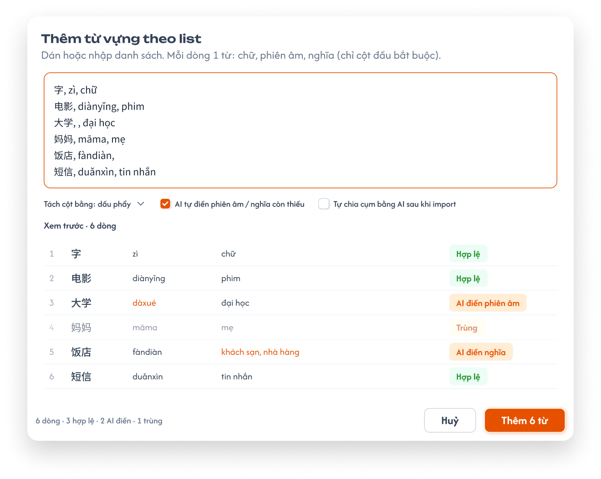
Popup Thêm theo list — dán / nhập, mỗi dòng 1 mục — nhấn để xem ảnh gốc

Mô tả:
- CD dán hoặc tự gõ danh sách vào ô văn bản, mỗi dòng 1 mục; hệ thống tách cột, xem trước rồi tạo mới bản ghi thư viện và gắn vào khoá.
Giải thích field/thành phần:
| Thành phần | Yêu cầu |
|---|---|
| Tiêu đề / mô tả | Thêm từ vựng theo list; Dán hoặc nhập danh sách. Mỗi dòng 1 từ: chữ, phiên âm, nghĩa (chỉ cột đầu bắt buộc). |
| Ô văn bản | Mỗi dòng = các field chính theo thứ tự cố định của loại (bảng Thứ tự cột bên dưới), tách bằng dấu phẩy. Chỉ cột đầu bắt buộc; cột sau được để trống. Field nhiều giá trị (Nghĩa Hán tự, Âm On / Kun) tách bằng ; trong cùng cột. |
| Tách cột bằng | Mặc định dấu phẩy. |
AI tự điền … còn thiếu |
Tick thì AI điền các cột trống của dòng (giá trị AI điền ở trạng thái chờ duyệt). |
Tự chia cụm bằng AI sau khi import |
Tick thì sau khi thêm mở luồng Chia cụm bằng AI cho các mục vừa thêm. |
| Xem trước | Bảng các dòng đã tách, nhãn từng dòng: Hợp lệ, AI điền …, Trùng (cảnh báo). |
| Thêm vào cụm | Mục mới vào cụm đang chọn ở panel Cụm (nếu đang chọn cụm). |
| Chân popup | Tổng N dòng · a hợp lệ · b AI điền · c trùng; Huỷ; Thêm N từ. |
Điểm cần lưu ý:
- Không có tải file Excel / CSV; menu
Thêm theo listghiDán hoặc nhập danh sách, mỗi dòng 1 từ. - Dòng trùng nội dung với mục đã có trong khoá: nhãn
Trùngchỉ cảnh báo; CD giữ dòng thì vẫn tạo bản ghi mới (nútThêm N từtính cả dòng trùng). CD bỏ được từng dòng khỏi danh sách trước khi thêm. - Thứ tự cột theo loại (chỉ cột 1 bắt buộc):
| Loại | Thứ tự cột trên mỗi dòng |
|---|---|
| Từ vựng | chữ, phiên âm, nghĩa |
| Ngữ pháp | tên điểm ngữ pháp, ý nghĩa, cấu trúc |
| Mẫu câu | câu, phiên âm, nghĩa |
| Hán tự | chữ, phiên âm, âm Hán Việt, nghĩa (nhiều nghĩa tách ;) |
| Kanji | chữ, âm On, âm Kun, âm Hán Việt, nghĩa (nhiều âm tách ;) |
| Phát âm (tiếng Trung) | âm, loại âm (Thanh mẫu / Vận mẫu / Âm tiết; Âm tiết tự tách Thanh mẫu + Vận mẫu nếu khớp) |
| Bảng chữ — tiếng Nhật | chữ, romaji (Bộ chữ, Bảng con theo bảng con đang chọn ở panel; Vị trí nhập ở Chi tiết mục) |
| Bảng chữ — tiếng Hàn, Anh, Đức, Pháp | Cần xác nhận (mục 3) |
- Field dài (Cách dùng, Ví dụ, Thành phần, Thứ tự nét…) không nhập qua list; để AI điền hoặc nhập ở Chi tiết mục.
- Dòng trống không tạo mục.
Testcase — Popup Thêm theo list
| Tên testcase | Priority | Loại test | Scenario | Role | Pre-condition | Given / When / Then | Expected Result |
|---|---|---|---|---|---|---|---|
| Case 16: Thêm theo list | High | Smoke | Flow 3 / REQ05 | CD | Popup Thêm theo list đang mở | Given dán 3 dòng chữ, phiên âm, nghĩa hợp lệWhen bấm Thêm 3 từThen tạo 3 bản ghi thư viện và gắn vào khoá |
- 3 dòng mới trong bảng - Toast Thành Công |
| Case 17: Cột trống và AI điền | High | Flow 3 / REQ10 | CD | Tick AI tự điền … |
Given dòng 大学, , đại họcWhen xem trước Then nhãn AI điền phiên âm và giá trị AI đề xuất |
- Sau khi thêm, phiên âm ở trạng thái AI chờ duyệt |
|
| Case 18: Dòng trùng chỉ cảnh báo | Medium | REQ05 | CD | Khoá đã có 妈妈, māma, mẹ |
Given dán lại dòng đó When xem trước và bấm Thêm Then dòng có nhãn Trùng nhưng vẫn được tạo nếu giữ |
- Có 2 bản ghi 妈妈 khác nhau |
|
| Case 19: Thiếu cột đầu | Medium | EX01 | CD | Popup đang mở | Given dòng , māma, mẹWhen xem trước Then dòng báo lỗi, không tạo |
- Các dòng hợp lệ khác vẫn thêm được | |
| Case 19a: Thứ tự cột của Hán tự | Medium | REQ05 | CD | Tab Hán tự, popup Thêm theo list | Given dòng 好, hǎo; hào, HẢO, Tốt; ThíchWhen xem trước Then tách đúng 4 cột, Nghĩa có 2 giá trị |
- Mô tả popup ghi chữ, phiên âm, âm Hán Việt, nghĩa |
Nhập nhanh cuối bảng
Ô nhập nhanh cuối bảng, đang gõ `电影` — nhấn để xem ảnh gốc

Mô tả:
- Dòng
Nhập nhanh … — nhấn Enter để thêmở cuối bảng để thêm nhanh 1 mục chỉ với field đầu (vd Từ).
Giải thích field/thành phần:
| Thành phần | Yêu cầu |
|---|---|
| Ô nhập | Nhập field đầu của loại (Từ vựng: Từ; Ngữ pháp: Tên điểm ngữ pháp…). |
Enter / + |
Tạo bản ghi thư viện mới, gắn vào khoá, thêm dòng vào cuối bảng; ô nhập xoá trống để nhập tiếp; Toast Thành Công — Đã thêm 1 từ vào <tên cụm>. (vd Đã thêm 1 từ vào Chưa phân cụm.). |
Điểm cần lưu ý:
- Mục mới thiếu các field bắt buộc còn lại nên tính là
Thiếu thông tin; CD sửa hoặc dùngĐiền thiếu bằng AI. - Đang chọn cụm thì mục mới thuộc cụm đó; đang ở
Tất cảthì thuộcChưa phân cụm. - Ô trống hoặc chỉ khoảng trắng: không tạo mục.
Testcase — Nhập nhanh cuối bảng
| Tên testcase | Priority | Loại test | Scenario | Role | Pre-condition | Given / When / Then | Expected Result |
|---|---|---|---|---|---|---|---|
| Case 20: Nhập nhanh một từ | High | Smoke | Flow 4 / REQ05 | CD | Tab Từ vựng, đang ở Tất cả |
Given gõ 电影When nhấn Enter Then thêm dòng 电影 cuối bảng |
- Thuộc Chưa phân cụm- Tính là thiếu thông tin - Ô nhập trống lại - Toast Đã thêm 1 từ vào Chưa phân cụm. |
| Case 21: Nhập nhanh trong cụm | Medium | REQ05 / REQ08 | CD | Đang chọn cụm Gia đình |
Given gõ 哥哥When nhấn Enter Then từ mới thuộc cụm Gia đình |
- Số từ của cụm tăng 1 | |
| Case 22: Ô trống | Low | EX02 | CD | Ô nhập trống | Given ô chỉ có khoảng trắng When nhấn Enter Then không tạo mục |
- Không có Toast thành công |
Menu thao tác dòng và sửa mục
Mô tả:
- Menu ⋮ của mỗi dòng (ảnh
02-menu-dong.pngở khu vực Bảng danh sách) gồm các thao tác trên 1 mục.
Giải thích thành phần:
| Thao tác | Yêu cầu |
|---|---|
Sửa nhanh (inline) |
Sửa trực tiếp các ô field chính trên dòng; Enter / rời dòng thì lưu, Esc thì huỷ. |
Mở chi tiết … |
Mở drawer Chi tiết mục (xem khu vực Chi tiết mục) để xem / sửa đầy đủ field của loại. |
Điền thiếu bằng AI |
AI điền các field bắt buộc đang trống của mục (xem khu vực AI). |
Thêm vào cụm / Gỡ khỏi cụm |
Mở popup chọn cụm (xem Popup Thêm vào cụm / Gỡ khỏi cụm). |
Nhân bản |
Tạo bản ghi thư viện mới có cùng nội dung, gắn vào khoá, cùng cụm với mục gốc. |
Xoá khỏi danh sách |
Gỡ mục khỏi khoá (xem Popup xác nhận gỡ mục khỏi khoá). |
Điểm cần lưu ý:
- Sửa ở S1 là sửa bản ghi thư viện; mọi khoá và bài học đang dùng mục thấy nội dung mới.
- Sắp xếp thứ tự dùng tay nắm kéo thả trên dòng, không có mục riêng trong menu.
Testcase — Menu thao tác dòng và sửa mục
| Tên testcase | Priority | Loại test | Scenario | Role | Pre-condition | Given / When / Then | Expected Result |
|---|---|---|---|---|---|---|---|
| Case 23: Sửa nhanh inline | High | Smoke | Flow 5 / REQ06 | CD | Có từ 爸爸 |
Given chọn Sửa nhanh (inline)When sửa Nghĩa và nhấn Enter Then lưu nghĩa mới |
- Toast Thành Công- Khoá khác dùng cùng bản ghi thấy nghĩa mới |
| Case 24: Huỷ sửa inline | Medium | REQ06 | CD | Đang sửa inline | Given đã đổi giá trị ô When nhấn Esc Then giữ giá trị cũ |
- Không có Toast CRUD | |
| Case 25: Nhân bản | Medium | REQ06 | CD | Từ 弟弟 thuộc cụm Gia đình |
Given chọn Nhân bảnWhen hệ thống xử lý Then có thêm 1 dòng 弟弟 |
- Là bản ghi thư viện mới - Thuộc cụm Gia đình |
Chi tiết mục (drawer)
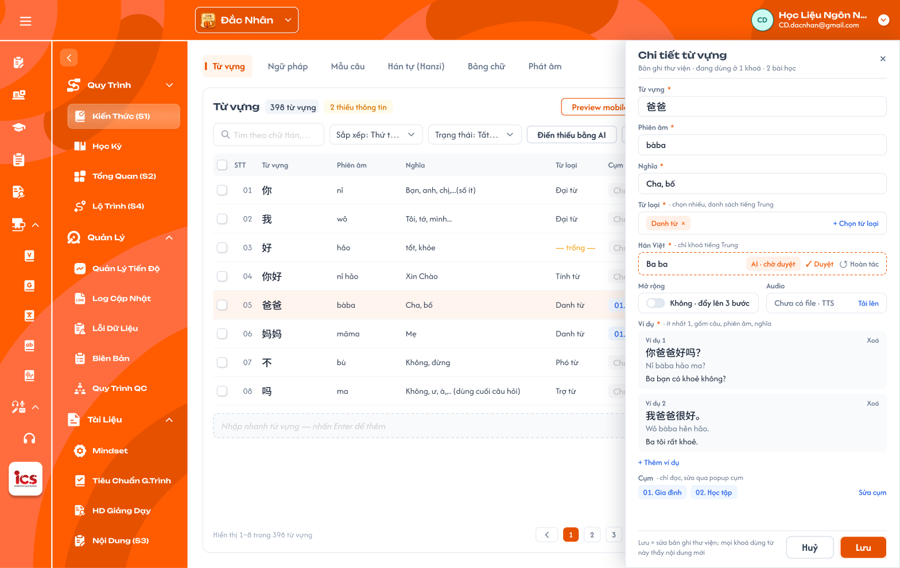
Drawer Chi tiết từ vựng của `爸爸`: đủ field, Hán Việt do AI điền chờ duyệt, danh sách ví dụ — nhấn để xem ảnh gốc

Mô tả:
- Mở từ menu dòng
Mở chi tiết …(hoặc bấm vào tên mục). Drawer trượt từ phải, phủ lên panel Cụm; bảng bên trái vẫn hiện, dòng đang mở được tô sáng. Mỗi loại có form riêng theo bảng Field (Phụ lục A); ảnh minh hoạ Từ vựng. - Lưu = sửa bản ghi thư viện; mọi khoá và bài học dùng mục đó thấy nội dung mới.
Giải thích thành phần:
| Thành phần | Yêu cầu |
|---|---|
| Tiêu đề | Chi tiết <loại> + dòng phụ Bản ghi thư viện · đang dùng ở N khoá · M bài học; × đóng (hỏi xác nhận nếu có thay đổi chưa lưu). |
| Field bắt buộc | Đánh dấu *; trống thì viền đỏ khi Lưu và mục vẫn tính thiếu thông tin. |
| Từ loại | Chọn nhiều chip từ danh sách theo ngôn ngữ; × trên chip để bỏ; + Chọn từ loại. |
| Hán Việt | Chỉ hiện ở trung tâm tiếng Trung. |
| Ô có giá trị AI | Viền nét đứt cam, nhãn AI · chờ duyệt, nút ✓ Duyệt / ↺ Hoàn tác ngay trong ô (giống Điền thiếu trên bảng). |
| Mở rộng | Toggle Không · đẩy lên 3 bước học (mặc định) / Có · không đẩy lên 3 bước. |
| Audio | Chưa có file · TTS + Tải lên; có file thì hiện tên file, nút nghe, Thay, Xoá. |
| Ví dụ | Danh sách thẻ Ví dụ n gồm câu, phiên âm, nghĩa; Xoá từng ví dụ (không xoá được khi chỉ còn 1); + Thêm ví dụ. |
| Cụm | Chỉ đọc: chip các cụm đang thuộc; Sửa cụm mở popup Thêm vào cụm / Gỡ khỏi cụm. |
| Chân drawer | Ghi chú Lưu = sửa bản ghi thư viện; mọi khoá dùng từ này thấy nội dung mới; Huỷ; Lưu. |
Điểm cần lưu ý:
- Field theo loại: Ngữ pháp có Cấu trúc, Cách dùng, Lưu ý (ô nhiều dòng), Video, Mở rộng; Hán tự có Thành phần, Thứ tự nét, Mẹo nhớ, Chữ giống, Từ liên quan (chọn từ S1), Nét viết SVG; Kanji có Âm On, Âm Kun, Bộ thủ, Thành phần, Mẹo nhớ, Từ liên quan, Nét viết SVG; Phát âm (tiếng Trung) có Loại âm, Nhóm, Thanh mẫu, Vận mẫu, Cách đọc, Hướng dẫn phát âm, Âm dễ nhầm, Audio theo 4 thanh, Video hướng dẫn; Bảng chữ Nhật có Bộ chữ, Bảng con, Vị trí, Chữ dễ nhầm, Mẹo nhớ, Từ ví dụ (danh sách từ, romaji, nghĩa), Audio.
- Field hệ thống tự sinh (Phiên âm từng chữ, Chuỗi tìm kiếm Kanji) không hiện để sửa.
- Mục đang được AI xử lý thì drawer chỉ đọc (xem khu vực AI).
Testcase — Chi tiết mục (drawer)
| Tên testcase | Priority | Loại test | Scenario | Role | Pre-condition | Given / When / Then | Expected Result |
|---|---|---|---|---|---|---|---|
| Case 25a: Sửa đủ field ở Chi tiết mục | High | Smoke | Flow 5 / REQ06 | CD | Từ 爸爸 thiếu Ví dụ |
Given mở Mở chi tiết …When thêm 1 ví dụ (câu, phiên âm, nghĩa), bấm LưuThen bản ghi thư viện cập nhật |
- Toast Thành Công- Mục hết thiếu thông tin - Khoá khác dùng 爸爸 thấy ví dụ mới |
| Case 25b: Thêm và xoá ví dụ | Medium | REQ03 / REQ06 | CD | Mục có 2 ví dụ | Given drawer đang mở When Xoá ví dụ 2 rồi LưuThen còn 1 ví dụ |
- Không xoá được ví dụ cuối cùng | |
| Case 25c: Duyệt giá trị AI trong drawer | Medium | REQ10 | CD | Hán Việt do AI điền chờ duyệt | Given ô Hán Việt có nhãn AI · chờ duyệtWhen bấm ✓ DuyệtThen giá trị thành chính thức |
- Nhãn AI mất - Lọc AI chờ duyệt không còn mục |
|
| Case 25d: Đóng khi chưa lưu | Low | REQ06 | CD | Đã sửa Nghĩa | Given bấm ×When xác nhận bỏ thay đổi Then drawer đóng, dữ liệu cũ giữ nguyên |
- Không có Toast CRUD |
Chọn nhiều và thao tác hàng loạt
Thanh thao tác khi chọn 3 từ — nhấn để xem ảnh gốc

Mô tả:
- Tick ít nhất 1 dòng thì thanh công cụ đổi thành thanh thao tác hàng loạt.
Giải thích thành phần:
| Thành phần | Yêu cầu |
|---|---|
Đã chọn N từ |
Số mục đang chọn. |
Chọn tất cả N từ |
Chọn toàn bộ mục thoả bộ lọc hiện tại (mọi trang). |
Điền thiếu bằng AI (k) |
k = số mục đang chọn đang thiếu thông tin; k = 0 thì không bấm được. |
Soát lỗi bằng AI |
AI soát lỗi các mục đang chọn (xem khu vực AI). |
Thêm vào cụm / Gỡ khỏi cụm |
Mở popup chọn cụm cho các mục đang chọn. |
Xoá (N) |
Gỡ N mục khỏi khoá (xem Popup xác nhận gỡ mục khỏi khoá). |
Bỏ chọn |
Bỏ chọn toàn bộ. |
Điểm cần lưu ý:
- Checkbox header ở trạng thái chọn một phần khi chỉ một số dòng của trang được chọn.
- Khi đã chọn toàn bộ mục thoả bộ lọc thì không hiện
Chọn tất cả N từ. - Khi AI đang xử lý các mục đang chọn, thanh hàng loạt chỉ còn
Đang điền x/N · DừngvàBỏ chọn;Soát lỗi bằng AI,Thêm vào cụm / Gỡ khỏi cụm,Xoá (N)mờ (ảnh07-ai-dien-thieu.png).
Testcase — Chọn nhiều và thao tác hàng loạt
| Tên testcase | Priority | Loại test | Scenario | Role | Pre-condition | Given / When / Then | Expected Result |
|---|---|---|---|---|---|---|---|
| Case 26: Đếm mục thiếu khi chọn nhiều | High | REQ10 | CD | Chọn 3 từ, 1 từ thiếu thông tin | Given thanh hàng loạt hiện When xem nút AI Then hiện Điền thiếu bằng AI (1) |
- AI chỉ chạy cho 1 từ thiếu | |
| Case 27: Chọn tất cả theo bộ lọc | Medium | REQ11 | CD | Lọc Thiếu thông tin có 2 từ |
Given đã chọn 1 từ When bấm Chọn tất cả 2 từThen cả 2 từ được chọn |
- Chỉ chọn mục thoả bộ lọc |
Popup Thêm vào cụm / Gỡ khỏi cụm
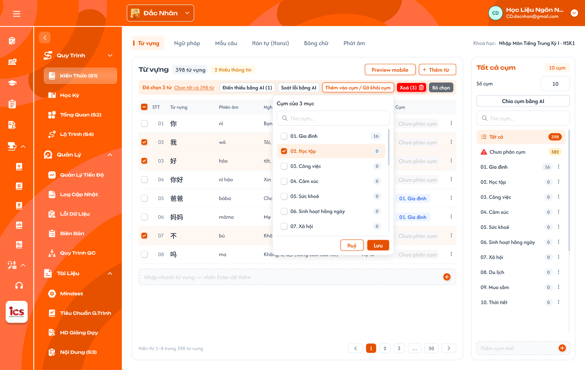
Popup `Cụm của 3 mục` — tick nhiều cụm rồi Lưu — nhấn để xem ảnh gốc

Mô tả:
- Gán các mục đang chọn vào một hoặc nhiều cụm, hoặc gỡ khỏi cụm. Một mục thuộc 0, 1 hoặc nhiều cụm.
Giải thích field/thành phần:
| Thành phần | Yêu cầu |
|---|---|
| Tiêu đề | Cụm của N mục (N mục đang chọn). |
| Tìm cụm | Tìm theo tên cụm. |
| Danh sách cụm | Checkbox từng cụm + số mục của cụm; cụm mà mọi mục đang chọn đều thuộc thì tick sẵn, chỉ một phần thuộc thì ở trạng thái chọn một phần. |
Huỷ / Lưu |
Lưu: tick thì thêm các mục vào cụm, bỏ tick thì gỡ các mục khỏi cụm. |
Điểm cần lưu ý:
- Popup không tạo cụm mới (cụm tạo bằng
Số cụm/Thêm cụm mớiở panel Cụm). - Mục bị gỡ khỏi mọi cụm thì về
Chưa phân cụm. - Thay đổi cụm không ảnh hưởng bài học đã thêm mục trước đó.
Testcase — Popup Thêm vào cụm / Gỡ khỏi cụm
| Tên testcase | Priority | Loại test | Scenario | Role | Pre-condition | Given / When / Then | Expected Result |
|---|---|---|---|---|---|---|---|
| Case 28: Thêm mục vào nhiều cụm | High | Smoke | Flow 9 / REQ08 | CD | Chọn 3 từ chưa phân cụm | Given popup cụm đang mở When tick Gia đình và Học tập, bấm LưuThen 3 từ thuộc cả 2 cụm |
- Cột Cụm hiện 01. Gia đình +1- Số mục 2 cụm tăng 3 |
| Case 29: Gỡ khỏi cụm cuối cùng | Medium | REQ08 | CD | Từ chỉ thuộc cụm Gia đình |
Given popup cụm When bỏ tick Gia đình, LưuThen từ về Chưa phân cụm |
- Từ vẫn còn trong khoá |
Panel Cụm và Số cụm
Mô tả:
- Panel bên phải của mỗi tab quản lý cụm của loại đó (mỗi loại có bộ cụm riêng): xem số mục mỗi cụm, chọn cụm để lọc bảng, tạo cụm theo Số cụm, thêm / đổi tên / xoá cụm, Chia cụm bằng AI.
Giải thích thành phần:
| Thành phần | Yêu cầu |
|---|---|
Tất cả cụm + badge N cụm |
Tiêu đề panel và số cụm hiện có. |
Số cụm |
Mặc định 0. Chỉ nhập được khi chưa có cụm: CD nhập N thì hệ thống tạo N cụm rỗng tên Chủ đề 1 … Chủ đề N. Chưa có cụm thì panel hiện Chưa có cụm. Nhập Số cụm để tạo các cụm rỗng "Chủ đề 1 … N". (ảnh 08-ngu-phap.png). Đã có cụm thì ô chỉ đọc, hiện số cụm hiện tại (ảnh 01-tu-vung.png); thêm / bớt cụm bằng Thêm cụm mới và menu ⋮ của cụm. |
Chia cụm bằng AI |
Mở popup Chia cụm bằng AI. |
| Tìm cụm | Tìm theo tên cụm. |
Tất cả |
Hiện mọi mục của loại; badge tổng số mục. |
Chưa phân cụm |
Mục không thuộc cụm nào; icon cảnh báo + số mục. |
| Dòng cụm | Số thứ tự + tên + số mục; menu ⋮: Đổi tên, Xoá cụm. |
Thêm cụm mới |
Thêm 1 cụm rỗng vào cuối danh sách. |
Điểm cần lưu ý:
- Xoá cụm (kể cả cụm có dữ liệu): cụm bị xoá, các mục chỉ mất gán cụm đó, vẫn còn trong khoá; mục không còn
cụm nào về
Chưa phân cụm. Muốn làm lại thì thêm cụm mới rồi chia bằng AI hoặc chọn tay. - Cụm không gắn với bài học; một cụm dùng được cho nhiều bài (thêm ở Chi tiết bài học).
- Xoá hết cụm (badge
0 cụm) thì ôSố cụmnhập lại được.
Testcase — Panel Cụm và Số cụm
| Tên testcase | Priority | Loại test | Scenario | Role | Pre-condition | Given / When / Then | Expected Result |
|---|---|---|---|---|---|---|---|
| Case 30: Tạo cụm theo Số cụm | High | Smoke | Flow 8 / REQ08 | CD | Tab Từ vựng, Số cụm = 0 | Given panel Cụm When nhập Số cụm 24Then tạo 24 cụm rỗng |
- Tên Chủ đề 1 … Chủ đề 24- Badge 24 cụm |
| Case 31: Thêm cụm mới | Medium | REQ08 | CD | Có 24 cụm | Given panel Cụm When thêm cụm mới Then có 25 cụm, cụm mới rỗng |
- Cụm mới ở cuối danh sách | |
| Case 32: Xoá cụm có dữ liệu | High | Smoke | Flow 8 / REQ08 | CD | Cụm Chủ đề 24 có 20 từ, 5 từ còn thuộc cụm khác |
Given menu ⋮ của cụm When chọn Xoá cụm và xác nhậnThen còn 23 cụm |
- 15 từ về Chưa phân cụm- 5 từ vẫn ở cụm khác - Không mục nào bị gỡ khỏi khoá |
| Case 30a: Số cụm chỉ đọc khi đã có cụm | Medium | REQ08 / EX11 | CD | Có 10 cụm | Given panel Cụm When bấm vào ô Số cụmThen ô chỉ đọc, hiện 10 |
- API đổi Số cụm bị từ chối - Xoá hết 10 cụm thì ô nhập lại được |
|
| Case 33: Cụm riêng theo loại | Medium | REQ08 | CD | Từ vựng có 24 cụm | Given tab Ngữ pháp When xem panel Cụm Then hiện cụm của Ngữ pháp |
- Không lẫn cụm của Từ vựng |
Popup Chia cụm bằng AI
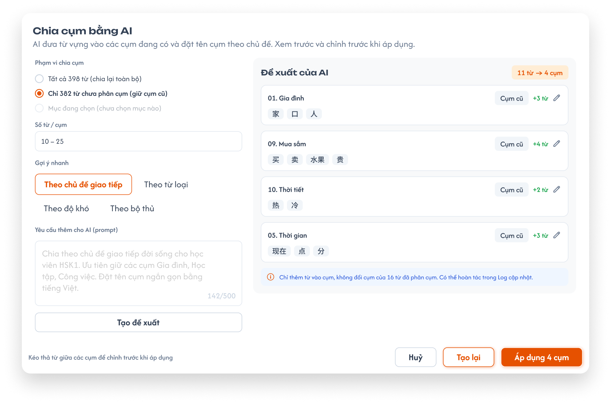
Popup Chia cụm bằng AI — AI đưa từ vào các cụm đang có — nhấn để xem ảnh gốc

Mô tả:
- AI đề xuất cách đưa các mục vào các cụm đang có của loại theo chủ đề và prompt của CD; CD xem trước, chỉnh rồi áp dụng. Ví dụ 500 từ vựng, 24 cụm: AI chia 500 từ vào 24 cụm và đặt tên cụm theo chủ đề.
Giải thích field/thành phần:
| Thành phần | Yêu cầu |
|---|---|
| Tiêu đề / mô tả | Chia cụm bằng AI; AI đưa từ vựng vào các cụm đang có và đặt tên cụm theo chủ đề. Xem trước và chỉnh trước khi áp dụng. |
| Phạm vi chia cụm | Chọn 1: Tất cả N từ (chia lại toàn bộ), Chỉ M từ chưa phân cụm (giữ cụm cũ), Mục đang chọn (mờ, ghi chưa chọn mục nào khi chưa chọn). |
| Số từ / cụm | Khoảng số mục mỗi cụm để AI tham khảo (vd 10 – 25); không bắt buộc, trống thì AI tự cân đối. |
| Gợi ý nhanh | Mẫu tiêu chí điền nhanh vào prompt: Theo chủ đề giao tiếp, Theo từ loại, Theo độ khó, Theo bộ thủ. Không có gợi ý theo bài học (cụm không gắn bài học). |
| Yêu cầu thêm cho AI (prompt) | Ô nhập, tối đa 500 ký tự (bộ đếm x/500). |
Tạo đề xuất |
Gửi yêu cầu cho AI. |
| Đề xuất của AI | Badge N mục → M cụm; mỗi cụm 1 thẻ: tên cụm (AI đặt theo chủ đề, sửa được bằng icon bút), nhãn Cụm cũ, +k từ, danh sách mục. Kéo thả mục giữa các cụm để chỉnh. |
| Ghi chú phạm vi | Vd Chỉ thêm từ vào cụm, không đổi cụm của 16 từ đã phân cụm. |
Huỷ / Tạo lại / Áp dụng M cụm |
Huỷ: không đổi gì; Tạo lại: AI đề xuất lại; Áp dụng: lưu phân bổ và tên cụm, ghi 1 dòng Chia cụm bằng AI: N mục → M cụm vào Log cập nhật. |
Điểm cần lưu ý:
- AI không tạo cụm mới, không tạo cụm con; chỉ dùng các cụm đang có (Số cụm); mọi thẻ đề xuất mang nhãn
Cụm cũ. Chưa có cụm (Số cụm = 0) thì chưa chia được: ToastCảnh Báo—Nhập Số cụm trước khi chia cụm bằng AI. - Áp dụng với phạm vi
Chỉ M mục chưa phân cụmchỉ thêm mục vào cụm, không đổi cụm của mục đã phân cụm. - Vì một mục được thuộc nhiều cụm, AI có thể đưa 1 mục vào nhiều cụm nếu hợp chủ đề.
- Hoàn tác sau khi áp dụng là chức năng của
Log cập nhật(requirement riêng), không nằm trong S1; dòng ghi chúCó thể hoàn tác trong Log cập nhậttrên popup chỉ dẫn sang đó.
Testcase — Popup Chia cụm bằng AI
| Tên testcase | Priority | Loại test | Scenario | Role | Pre-condition | Given / When / Then | Expected Result |
|---|---|---|---|---|---|---|---|
| Case 34: Chia cụm bằng AI | High | Smoke | Flow 10 / REQ09 | CD | 500 từ chưa phân cụm, 24 cụm rỗng | Given popup, phạm vi Chỉ 500 mục chưa phân cụm, nhập promptWhen Tạo đề xuất rồi Áp dụng 24 cụmThen 500 từ được đưa vào 24 cụm |
- Tên cụm đổi theo chủ đề - Không có cụm mới - Toast Thành Công |
| Case 35: Giữ cụm cũ | High | REQ09 | CD | 16 từ đã ở cụm Gia đình |
Given phạm vi Chỉ … chưa phân cụmWhen áp dụng Then 16 từ giữ nguyên cụm |
- Chỉ từ chưa phân cụm được thêm vào cụm | |
| Case 36: Chỉnh đề xuất trước khi áp dụng | Medium | REQ09 | CD | Đã có đề xuất | Given đề xuất AI When kéo 1 từ sang cụm khác và sửa tên cụm Then áp dụng đúng theo bản đã chỉnh |
- Tên cụm theo bản sửa | |
| Case 37: Chưa có cụm | Medium | EX05 | CD | Số cụm = 0 | Given panel Cụm When bấm Chia cụm bằng AIThen Toast Cảnh Báo — Nhập Số cụm trước khi chia cụm bằng AI. |
- Không gửi yêu cầu AI - Panel gợi ý nhập Số cụm |
|
| Case 38: Huỷ | Low | REQ09 | CD | Đã có đề xuất | Given popup When bấm HuỷThen đóng popup |
- Cụm không thay đổi - Không có Toast CRUD |
AI Điền thiếu và Soát lỗi
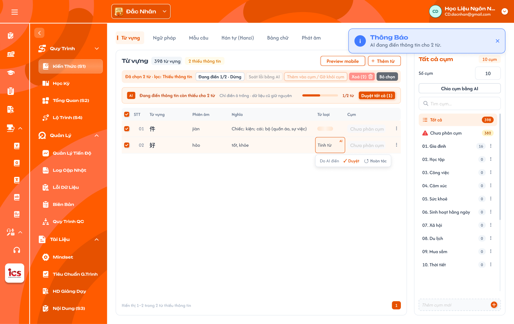
Điền thiếu bằng AI đang chạy, ô do AI điền có Duyệt / Hoàn tác — nhấn để xem ảnh gốc

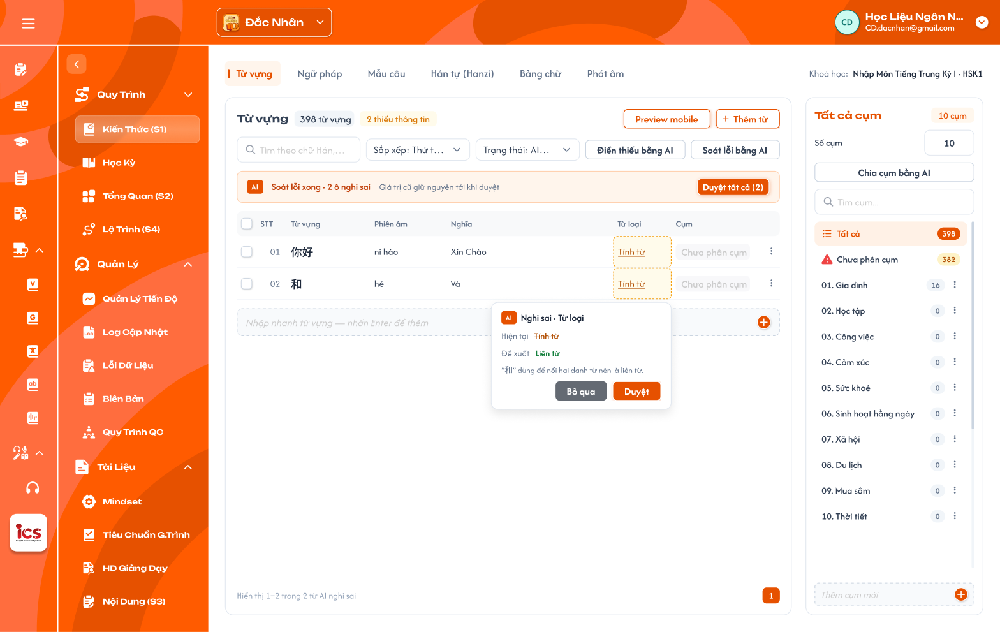
Soát lỗi bằng AI: ô nghi sai viền nét đứt, popover Hiện tại / Đề xuất / lý do — nhấn để xem ảnh gốc

Mô tả:
- Điền thiếu bằng AI: AI điền các field bắt buộc đang trống, giữ nguyên dữ liệu đã có.
- Soát lỗi bằng AI: AI kiểm tra các field đã có dữ liệu (vd phiên âm sai thanh điệu, nghĩa không khớp, từ loại sai), đánh dấu ô nghi sai, đề xuất sửa kèm lý do.
- Mọi giá trị AI điền / đề xuất đều ở trạng thái chờ duyệt cho tới khi CD duyệt.
Giải thích thành phần:
| Thành phần | Yêu cầu |
|---|---|
| Điểm gọi Điền thiếu | Nút thanh công cụ (các mục thiếu trong phạm vi đang xem); menu dòng (1 mục); thanh hàng loạt Điền thiếu bằng AI (k); Preview mobile Điền thiếu từ này. |
| Điểm gọi Soát lỗi | Nút Soát lỗi bằng AI ở thanh công cụ và thanh hàng loạt. |
| Thanh tiến độ Điền thiếu | Đang điền thông tin còn thiếu cho N từ · Chỉ điền ô trống · dữ liệu cũ giữ nguyên, thanh x/N từ, Duyệt tất cả (k); nút Đang điền x/N · Dừng trên thanh hàng loạt. Toast Thông Báo — AI đang điền thông tin cho N từ. |
| Ô AI điền | Nhãn AI; bấm ô hiện Do AI điền · ✓ Duyệt · ↺ Hoàn tác. |
| Thanh kết quả Soát lỗi | Soát lỗi xong · N ô nghi sai · Giá trị cũ giữ nguyên tới khi duyệt, Duyệt tất cả (N); bảng lọc AI nghi sai. |
| Ô AI nghi sai | Viền nét đứt; bấm ô hiện popover Nghi sai · <tên field>: Hiện tại (gạch ngang), Đề xuất, lý do (vd "和" dùng để nối hai danh từ nên là liên từ.); Bỏ qua / Duyệt (thay bằng đề xuất). |
Duyệt tất cả (k) |
Duyệt mọi giá trị AI đang chờ trong phạm vi đang xem; k = số giá trị chờ duyệt. |
Điểm cần lưu ý:
- Giá trị chờ duyệt được lưu nháp kèm cờ
AI · chờ duyệt; mục vẫn tính là thiếu / chưa đủ cho tới khi duyệt. Học viên chỉ thấy giá trị đã duyệt. - Đề xuất sửa của Soát lỗi không ghi đè giá trị cũ cho tới khi duyệt.
Hoàn táctrả ô về giá trị trước khi AI điền (trống).Dừng: các mục chưa xử lý giữ nguyên; mục đã điền giữ trạng thái chờ duyệt.- Lọc Trạng thái
AI chờ duyệt/AI nghi saiđể duyệt nhanh. - Khoá mục AI đang xử lý: trong lúc Điền thiếu / Soát lỗi chạy, các mục đang xử lý không sửa inline được, không
mở Chi tiết mục để sửa,
Xoá,Thêm vào cụm / Gỡ khỏi cụmmờ; thanh hàng loạt chỉ cònDừng,Bỏ chọn. Mục khác và Nhập nhanh vẫn thao tác bình thường. API thay đổi mục đang xử lý bị từ chối (EX10).
Testcase — AI Điền thiếu và Soát lỗi
| Tên testcase | Priority | Loại test | Scenario | Role | Pre-condition | Given / When / Then | Expected Result |
|---|---|---|---|---|---|---|---|
| Case 39: Điền thiếu và duyệt | High | Smoke | Flow 6 / REQ10 | CD | Từ 好 thiếu Từ loại |
Given menu dòng của 好When chọn Điền thiếu bằng AI rồi DuyệtThen Từ loại được lưu |
- Trước khi duyệt: lọc AI chờ duyệt có 好- Sau khi duyệt: tính là đủ thông tin |
| Case 40: Chỉ điền ô trống | High | REQ10 | CD | Từ có Nghĩa, thiếu Phiên âm | Given chạy Điền thiếu When AI xử lý xong Then chỉ ô Phiên âm có nhãn AI |
- Nghĩa giữ nguyên | |
| Case 41: Hoàn tác | Medium | REQ10 | CD | Ô có giá trị AI chờ duyệt | Given bấm ô AI When chọn Hoàn tácThen ô trở lại trống |
- Mục vẫn thiếu thông tin | |
| Case 42: Dừng giữa chừng | Medium | REQ10 / EX04 | CD | Đang điền 1/2 từ | Given thanh tiến độ When bấm DừngThen từ thứ 2 không được điền |
- Từ thứ 1 giữ giá trị chờ duyệt | |
| Case 43a: Khoá mục đang AI xử lý | High | REQ10 / EX10 | CD | Đang điền 1/2 từ | Given thanh hàng loạt When xem nút và thử sửa inline mục đang xử lý Then Xoá (2), Thêm vào cụm / Gỡ khỏi cụm mờ, không sửa được |
- Mục khác và Nhập nhanh vẫn dùng được - Gọi API xoá mục đang xử lý bị từ chối |
|
| Case 43: Soát lỗi dữ liệu đã có | High | Flow 7 / REQ10 | CD | Từ có phiên âm sai thanh điệu | Given chọn từ When chạy Soát lỗi bằng AIThen ô phiên âm đánh dấu nghi sai kèm đề xuất |
- Giá trị cũ giữ nguyên tới khi duyệt - Có trong lọc AI nghi sai |
Preview mobile
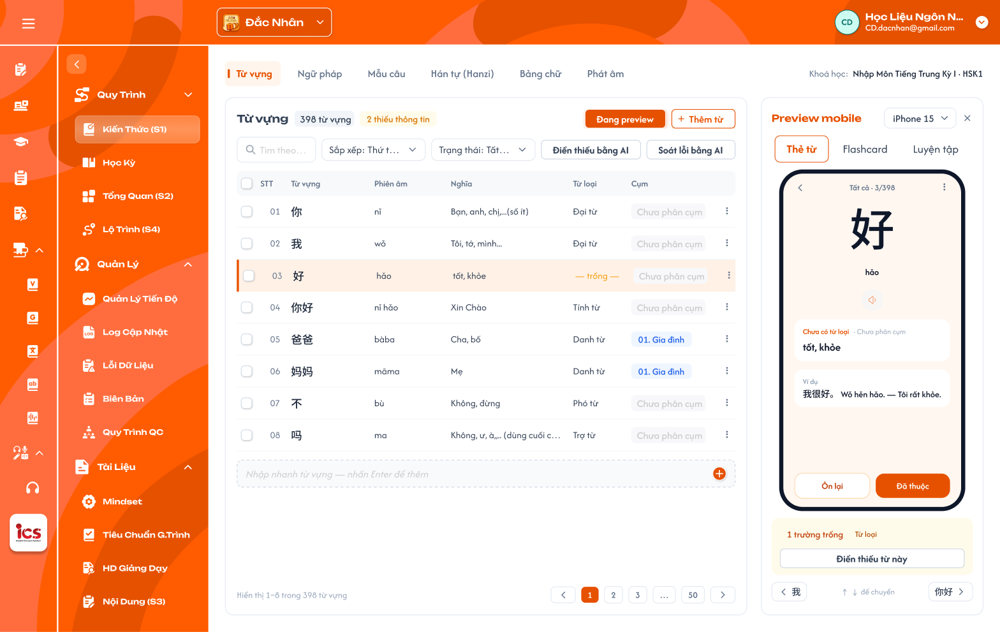
Preview mobile theo từ đang chọn — nhấn để xem ảnh gốc

Mô tả:
- Xem trước mục đang chọn như trên app học viên; panel Preview thay chỗ panel Cụm. Mọi loại kiến thức đều có Preview, mỗi loại 1 dạng thẻ riêng.
Giải thích thành phần:
| Thành phần | Yêu cầu |
|---|---|
| Nút | Preview mobile đổi thành Đang preview khi panel mở; × đóng panel. |
| Thiết bị | Chọn kích thước máy (vd iPhone 15). |
| Tab dạng thẻ | Từ vựng: Thẻ từ, Flashcard, Luyện tập. Loại khác: tái hiện đúng màn học thật của app học viên cho loại đó (danh sách thẻ từng loại — mục 3, chờ ảnh màn app). |
| Thẻ | Vị trí Tất cả · 3/398; nội dung theo field của mục; icon loa phát Audio (không có file thì TTS). |
| Thông tin thiếu | N trường trống + tên field + Điền thiếu từ này. |
| Điều hướng | Nút mục trước / sau, phím ↑ ↓ để chuyển. |
Điểm cần lưu ý:
- Preview chỉ hiển thị, nút học viên trên thẻ (
Ôn lại,Đã thuộc) không ghi dữ liệu học. - Giá trị AI chờ duyệt không hiển thị như giá trị chính thức (học viên chỉ thấy giá trị đã duyệt).
- UI cần bổ sung: Preview cho Ngữ pháp, Mẫu câu, Hán tự, Kanji, Bảng chữ, Phát âm — vẽ theo màn app học viên sau khi có ảnh / mô tả màn app (mục 3).
Testcase — Preview mobile
| Tên testcase | Priority | Loại test | Scenario | Role | Pre-condition | Given / When / Then | Expected Result |
|---|---|---|---|---|---|---|---|
| Case 44: Xem trước từ đang chọn | Medium | Flow 13 / REQ12 | CD | Đang chọn từ 好 |
Given bấm Preview mobileWhen panel mở Then hiện thẻ của 好 |
- Vị trí 3/398- Hiện 1 trường trống · Từ loại |
|
| Case 45: Chuyển mục bằng phím | Low | REQ12 | CD | Panel Preview đang mở | Given đang xem 好When nhấn ↓ Then chuyển sang mục kế tiếp |
- Dòng tương ứng trên bảng được chọn |
Popup xác nhận gỡ mục khỏi khoá
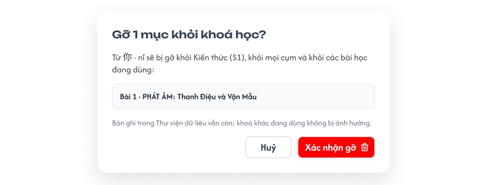
Popup gỡ mục khỏi khoá học, liệt kê bài đang dùng — nhấn để xem ảnh gốc

Mô tả:
Xoá khỏi danh sách(1 mục) hoặcXoá (N)(hàng loạt) gỡ mục khỏi khoá học; bản ghi thư viện vẫn còn.
Giải thích thành phần:
| Thành phần | Yêu cầu |
|---|---|
| Tiêu đề | Gỡ N mục khỏi khoá học? |
| Nội dung | Vd Từ 你 · nǐ sẽ bị gỡ khỏi Kiến thức (S1), khỏi mọi cụm và khỏi các bài học đang dùng: + danh sách các bài đang dùng (vd Bài 1 · PHÁT ÂM: Thanh Điệu và Vận Mẫu). |
| Ghi chú | Bản ghi trong Thư viện dữ liệu vẫn còn; khoá khác đang dùng không bị ảnh hưởng. |
Huỷ |
Đóng popup, không thay đổi. |
Xác nhận gỡ |
Gỡ mục khỏi khoá, gỡ khỏi mọi cụm của khoá và gỡ luôn khỏi các bài học đã liệt kê. |
Điểm cần lưu ý:
- Gỡ không xoá bản ghi thư viện; khoá khác đang dùng bản ghi không bị ảnh hưởng.
Testcase — Popup xác nhận gỡ mục khỏi khoá
| Tên testcase | Priority | Loại test | Scenario | Role | Pre-condition | Given / When / Then | Expected Result |
|---|---|---|---|---|---|---|---|
| Case 46: Gỡ mục đang dùng ở bài học | High | Smoke | Flow 11 / REQ07 | CD | Từ 你 đang dùng ở Bài 1, Bài 2 |
Given menu dòng Xoá khỏi danh sáchWhen popup Gỡ 1 mục khỏi khoá học? liệt kê Bài 1, Bài 2 và CD bấm Xác nhận gỡThen từ bị gỡ khỏi khoá và 2 bài |
- Bản ghi thư viện vẫn còn - Toast Thành Công |
| Case 47: Huỷ gỡ | Medium | REQ07 | CD | Popup đang mở | Given popup xác nhận When bấm HuỷThen không thay đổi |
- Không có Toast CRUD |
Thêm / gỡ kiến thức trong Chi tiết bài học
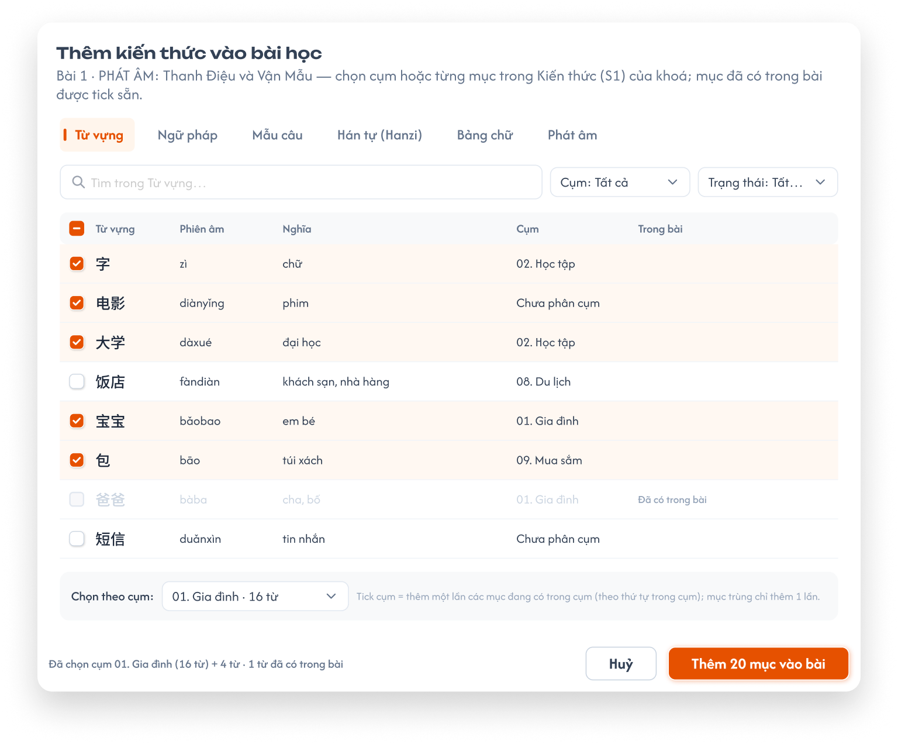
Popup Thêm kiến thức vào bài học (Figma `CD-KH-030270`): tab theo loại, tick cụm hoặc từng mục — nhấn để xem ảnh gốc

Mô tả:
- Tại Chi tiết bài học (Học kỳ → bài học) của khoá, tab
Kiến thức→+ Thêmđể thêm kiến thức đã có trong S1 của chính khoá đó vào bài; không sửa nội dung kiến thức tại đây. PhầnKỹ năngcủa tab giữ nguyên theo requirement Học kỳ — Bài học.
Giải thích thành phần:
| Thành phần | Yêu cầu |
|---|---|
Popup + Thêm |
Tiêu đề Thêm kiến thức vào bài học + tên bài; tab theo loại kiến thức (đúng ngôn ngữ trung tâm); ô tìm kiếm, lọc Cụm, Trạng thái; bảng Mục có checkbox, field chính, cột Cụm, cột Trong bài; dòng Chọn theo cụm để tick Cụm; chân popup Đã chọn cụm … (k từ) + N từ · M từ đã có trong bài, Huỷ, Thêm N mục vào bài. |
| Tick Cụm | Thêm các mục đang có trong cụm (theo thứ tự trong cụm). |
| Tick Mục | Thêm từng mục. Mục đã có trong bài mờ, tick sẵn, nhãn Đã có trong bài. |
| Danh sách trong bài | Nhóm theo loại; mỗi mục có × để gỡ khỏi bài; không có nút sửa. |
Điểm cần lưu ý:
- Chọn cụm là thêm một lần các mục đang có: sau đó cụm thêm / bớt mục hoặc bị xoá thì bài không tự đổi; gỡ được từng mục trong bài.
- Một mục nằm trong nhiều cụm được chọn chỉ thêm vào bài 1 lần. Một cụm dùng được cho nhiều bài.
- Nội dung mục trong bài luôn là nội dung hiện tại của bản ghi thư viện (sửa ở S1 thì bài thấy nội dung mới).
Testcase — Thêm / gỡ kiến thức trong Chi tiết bài học
| Tên testcase | Priority | Loại test | Scenario | Role | Pre-condition | Given / When / Then | Expected Result |
|---|---|---|---|---|---|---|---|
| Case 48: Thêm cụm vào bài | High | Smoke | Flow 12 / REQ13 | CD | Cụm Gia đình có 16 từ |
Given popup + Thêm, tab Từ vựngWhen tick cụm Gia đình, xác nhậnThen bài có 16 từ |
- Đúng thứ tự trong cụm - Toast Thành Công |
| Case 49: Gỡ một mục khỏi bài | High | Smoke | Flow 12 / REQ13 | CD | Bài có 16 từ | Given danh sách kiến thức của bài When bấm × ở 1 từThen bài còn 15 từ |
- Từ vẫn còn trong S1 và cụm |
| Case 50: Cụm đổi sau khi thêm | Medium | REQ13 | CD | Đã thêm cụm Gia đình vào bài |
Given thêm 1 từ mới vào cụm ở S1 When mở lại bài Then bài không tự có từ mới |
- Bài giữ 16 từ | |
| Case 51: Không sửa tại bài học | Medium | REQ13 | CD | Bài có kiến thức | Given danh sách kiến thức của bài When xem thao tác Then không có thao tác sửa |
- Chỉ có + Thêm và × |
Toast phản hồi CRUD

Toast Thành Công, Thông Báo, Cảnh Báo và Có Lỗi Xảy Ra — nhấn để xem ảnh gốc
Mô tả:
- Phản hồi sau thêm / sửa / nhân bản / gỡ mục, thao tác cụm, áp dụng AI và thêm / gỡ kiến thức trong bài học.
Giải thích thành phần:
| Loại Toast | Tiêu đề cố định | Khi sử dụng |
|---|---|---|
| Thành công | Thành Công |
Backend đã xác nhận thao tác thay đổi dữ liệu thành công (vd Đã thêm 1 từ vào Chưa phân cụm.). |
| Thông tin | Thông Báo |
Thao tác đã được tiếp nhận nhưng cần thời gian xử lý (vd AI đang điền thông tin cho 2 từ.). |
| Cảnh báo | Cảnh Báo |
Dữ liệu chưa hợp lệ hoặc điều kiện cần kiểm tra (vd Nhập Số cụm trước khi chia cụm bằng AI.). |
| Lỗi | Có Lỗi Xảy Ra |
Backend / network / AI không hoàn tất thao tác. |
Điểm cần lưu ý:
- Mỗi thao tác logic chỉ một Toast kết quả; Huỷ, tìm kiếm, lọc, đổi tab, Preview không có Toast CRUD.
- Toast không thay thế lỗi tại field; không chứa thông tin kỹ thuật.
Testcase — Toast phản hồi CRUD
| Tên testcase | Priority | Loại test | Scenario | Role | Pre-condition | Given / When / Then | Expected Result |
|---|---|---|---|---|---|---|---|
| Toast Case 1: Thành công | High | REQ15 | CD | Dữ liệu hợp lệ | Given CD xác nhận thao tác thay đổi When backend xử lý thành công Then hiển thị Thành Công |
- Chỉ sau khi backend xác nhận - Đúng một Toast |
|
| Toast Case 2: Cảnh báo | High | REQ15 | CD | Điều kiện chưa đủ | Given chia cụm AI khi Số cụm = 0 When bấm Chia cụm bằng AIThen hiển thị Cảnh Báo — Nhập Số cụm trước khi chia cụm bằng AI. |
- Không gửi yêu cầu | |
| Toast Case 3: Lỗi xử lý | High | REQ15 | CD | Backend / AI lỗi | Given đã gửi thao tác hợp lệ When xử lý thất bại Then hiển thị Có Lỗi Xảy Ra |
- Dữ liệu không cập nhật một phần | |
| Toast Case 4: Đang xử lý | Medium | REQ15 | CD | AI chạy cho nhiều mục | Given đã bấm Điền thiếu cho nhiều mục When AI đang chạy Then hiển thị Thông Báo nếu cần |
- Không báo thành công sớm |
2. Yêu cầu
2.1. Flow chính
Flow 1 / REQ01 / REQ02 / REQ11: Mở Kiến thức (S1) và xem danh sách
CD chọn trung tâm ở header → vào khoá học → Kiến thức (S1)
→ Hệ thống lấy ngôn ngữ theo trung tâm đang chọn → hiện các tab loại kiến thức tương ứng
→ Mở tab đầu (Từ vựng): bảng mục của khoá + panel Cụm của Từ vựng
→ CD tìm kiếm / sắp xếp / lọc Trạng thái / chọn cụm → bảng, badge, phân trang cập nhật
Flow 2 / REQ04 / REQ05: Thêm từ thư viện dữ liệu
CD bấm + Thêm → Thêm từ thư viện → popup thư viện
→ Lọc Kho (Tất cả / Từ điển / Khoá học), Cấp độ, Từ loại, tìm kiếm → tick các mục (mục đã gắn khoá bị khoá)
→ Chọn Thêm vào cụm (mặc định cụm đang chọn) → Thêm N
→ Thành công: gắn tham chiếu bản ghi thư viện vào khoá, thêm vào cụm đã chọn, Toast Thành Công
→ Thất bại: không gắn mục nào, Toast Có Lỗi Xảy Ra
Flow 3 / REQ05 / REQ10: Thêm theo list
CD bấm + Thêm → Thêm theo list → dán / nhập mỗi dòng 1 mục, các field tách dấu phẩy
→ Hệ thống tách cột, xem trước: Hợp lệ / AI điền … / Trùng (cảnh báo) / lỗi thiếu cột đầu
→ (Tuỳ chọn) AI tự điền cột trống — giá trị ở trạng thái chờ duyệt
→ Thêm N → tạo N bản ghi thư viện mới, gắn vào khoá (và cụm đang chọn)
→ (Tuỳ chọn) Tự chia cụm bằng AI → mở Flow 10 cho các mục vừa thêm
Flow 4 / REQ05: Nhập nhanh
CD gõ field đầu vào ô Nhập nhanh → Enter / + (Thêm theo list: mỗi dòng theo thứ tự cột của loại)
→ Tạo bản ghi thư viện mới, gắn vào khoá, thêm dòng cuối bảng (vào cụm đang chọn nếu có)
→ Mục tính là Thiếu thông tin cho tới khi đủ field bắt buộc
Flow 5 / REQ06: Sửa và nhân bản mục
CD chọn Sửa nhanh (inline) hoặc Mở chi tiết (drawer đủ field, danh sách ví dụ, audio) → sửa field → lưu
→ Lưu vào bản ghi thư viện → mọi khoá / bài học dùng bản ghi thấy nội dung mới
CD chọn Nhân bản → tạo bản ghi thư viện mới cùng nội dung, gắn vào khoá, cùng cụm
Flow 6 / REQ10: Điền thiếu bằng AI
CD gọi Điền thiếu (1 mục / nhiều mục / các mục thiếu trong phạm vi đang xem)
→ AI chỉ điền field bắt buộc đang trống; thanh tiến độ x/N, có Dừng; mục đang xử lý bị khoá thao tác
→ Giá trị lưu nháp với cờ AI · chờ duyệt (mục vẫn tính thiếu)
→ CD Duyệt / Duyệt tất cả → giá trị chính thức; Hoàn tác → ô trống lại
Flow 7 / REQ10: Soát lỗi bằng AI
CD gọi Soát lỗi (mục đang chọn / phạm vi đang xem)
→ AI kiểm tra field đã có dữ liệu → đánh dấu ô nghi sai + giá trị đề xuất
→ CD Duyệt (thay bằng đề xuất) hoặc Bỏ qua; giá trị cũ giữ nguyên tới khi duyệt
Flow 8 / REQ08: Số cụm, thêm và xoá cụm
Loại kiến thức có Số cụm = 0 → CD nhập N → tạo N cụm rỗng Chủ đề 1 … Chủ đề N (đã có cụm thì Số cụm chỉ đọc)
CD Thêm cụm mới → thêm 1 cụm rỗng cuối danh sách
CD Đổi tên cụm → lưu tên mới
CD Xoá cụm → cụm bị xoá; các mục chỉ mất gán cụm đó, mục không còn cụm nào về Chưa phân cụm
Flow 9 / REQ08: Thêm vào cụm / Gỡ khỏi cụm
CD chọn 1 hoặc nhiều mục → Thêm vào cụm / Gỡ khỏi cụm
→ Tick / bỏ tick các cụm → Lưu
→ Mục được thêm vào / gỡ khỏi các cụm; mục không còn cụm nào về Chưa phân cụm
Flow 10 / REQ09: Chia cụm bằng AI
CD bấm Chia cụm bằng AI (loại đã có ≥ 1 cụm)
→ Chọn phạm vi, Số từ / cụm (tuỳ chọn), gợi ý nhanh, nhập prompt → Tạo đề xuất
→ AI đưa mục vào các cụm đang có, đặt tên cụm theo chủ đề (không tạo cụm mới / cụm con)
→ CD kéo thả mục giữa cụm, sửa tên cụm; Tạo lại nếu cần
→ Áp dụng: lưu phân bổ + tên cụm, ghi Log cập nhật, Toast Thành Công; Huỷ: không đổi
Flow 11 / REQ07: Gỡ mục khỏi khoá
CD chọn Xoá khỏi danh sách (1 mục) hoặc Xoá (N)
→ Popup xác nhận: số mục + các bài học đang dùng mục
→ Xác nhận: gỡ mục khỏi khoá, khỏi các cụm và khỏi các bài học; bản ghi thư viện vẫn còn
→ Huỷ: không thay đổi
Flow 12 / REQ13: Thêm / gỡ kiến thức trong Chi tiết bài học
CD mở Chi tiết bài học → tab Kiến thức → + Thêm
→ Popup tab theo loại → tick Cụm ở dòng Chọn theo cụm (thêm các mục đang có) và / hoặc tick Mục → Thêm N mục vào bài
→ Bài có thêm các mục (mục trùng giữa các cụm chỉ thêm 1 lần)
CD bấm × ở một mục trong bài → gỡ mục khỏi bài; mục vẫn còn trong S1
Flow 13 / REQ12: Preview mobile
CD chọn mục → Preview mobile → panel hiện thẻ theo màn học của app học viên cho loại đó
→ Chuyển mục bằng nút / ↑ ↓; mục thiếu thì hiện field trống + Điền thiếu từ này
2.2. Ngoại lệ
- EX01: Dòng Thêm theo list thiếu cột đầu → dòng báo lỗi, không tạo; các dòng hợp lệ khác vẫn thêm được.
- EX02: Nhập nhanh rỗng hoặc chỉ khoảng trắng → không tạo mục.
- EX03: Gắn bản ghi thư viện đã có trong khoá → không cho chọn (khoá
Đã có), không gắn trùng. - EX04: AI lỗi hoặc CD bấm
Dừng→ mục chưa xử lý giữ nguyên; mục đã điền giữ trạng thái chờ duyệt; báo lỗi nếu AI lỗi. - EX05: Chia cụm bằng AI khi loại chưa có cụm (Số cụm = 0) → không gửi yêu cầu, nhắc nhập Số cụm.
- EX06: Role khác CD truy cập S1 hoặc gọi API thay đổi kiến thức → từ chối, không thay đổi dữ liệu.
- EX07: Truy cập loại kiến thức không áp dụng cho ngôn ngữ khoá học (qua URL / API) → từ chối.
- EX08: Truy cập khoá học / kiến thức của trung tâm khác trung tâm đang chọn → từ chối.
- EX09: Lưu thất bại (sửa, cụm, áp dụng AI, thêm / gỡ ở bài học) → giữ dữ liệu cũ, Toast
Có Lỗi Xảy Ra. - EX10: Sửa / xoá / đổi cụm mục đang được AI xử lý → UI mờ thao tác; API từ chối, dữ liệu không đổi.
- EX11: Đổi
Số cụmkhi loại đã có cụm → ô chỉ đọc; API từ chối. - EX12: Lưu Chi tiết mục với Ví dụ rỗng (0 ví dụ) hoặc Từ loại ngoài danh sách → báo lỗi tại field, không lưu.
2.3. Yêu cầu khác
- REQ01 – Phạm vi: Mỗi khoá học có danh sách Kiến thức (S1) riêng; dữ liệu theo trung tâm CD đang chọn ở header.
- REQ02 – Tab theo loại và ngôn ngữ: Mỗi loại kiến thức 1 tab; chỉ hiện loại áp dụng cho ngôn ngữ của trung tâm đang chọn (Đắc Nhân Trung, Sakumi Nhật, Saechang Hàn, Créatis Pháp, Creative English Anh, Betreux Đức) theo bảng ở khu vực Khung màn hình; khoá học không có field ngôn ngữ.
- REQ03 – Field và thiếu thông tin: Mỗi loại có bộ field theo bảng Field và Phụ lục A; mục thiếu thông tin khi trống bất kỳ field bắt buộc; Từ loại chọn 1 hoặc nhiều giá trị từ danh sách cố định theo ngôn ngữ; Bộ thủ chọn 1 trong 214 bộ Khang Hy; Ví dụ của Từ vựng / Ngữ pháp là danh sách ≥ 1 (câu, phiên âm, nghĩa); furigana và chuỗi tìm kiếm Kanji do hệ thống sinh.
- REQ04 – Thư viện dữ liệu: Mục của S1 là tham chiếu bản ghi thư viện; một bản ghi gắn vào một khoá tối đa 1 lần. Thêm
mới tại S1 tạo bản ghi thư viện; sửa tại S1 sửa bản ghi thư viện (mọi khoá dùng bản ghi đổi theo). Thư viện theo
ngôn ngữ, có 2 kho
Từ điển(import sẵn) vàKhoá học(tạo từ S1); màn quản lý thư viện là requirement riêng. - REQ05 – Thêm mục: Thêm từ thư viện, Thêm theo list (mỗi dòng 1 mục theo thứ tự cột của loại, tách dấu phẩy, chỉ cột
đầu bắt buộc, nhiều giá trị trong 1 cột tách
;), Nhập nhanh. Cho phép trùng nội dung: Thêm theo list chỉ cảnh báo dòng trùng, vẫn tạo bản ghi mới. Không có tải file Excel / CSV. - REQ06 – Sửa và nhân bản: Sửa nhanh inline và drawer Chi tiết mục (đủ field, danh sách ví dụ, audio, duyệt giá trị AI); Nhân bản tạo bản ghi thư viện mới cùng nội dung, cùng cụm.
- REQ07 – Gỡ khỏi khoá: Xoá ở S1 là gỡ mục khỏi khoá (bản ghi thư viện còn); có xác nhận, liệt kê bài đang dùng; xác nhận thì gỡ luôn khỏi các bài đó.
- REQ08 – Cụm: Mỗi loại có bộ cụm riêng; Số cụm mặc định 0, chỉ nhập khi chưa có cụm, nhập N tạo
Chủ đề 1…Nrỗng; đã có cụm thì Số cụm chỉ đọc, thêm cụm rỗng, đổi tên, xoá cụm (mục chỉ mất gán) bằng panel. Mục thuộc 0, 1 hoặc nhiều cụm; cột Cụm hiện+N, hover xem đủ, bấm mở popup cụm. Cụm không gắn bài học. - REQ09 – Chia cụm bằng AI: AI chia mục vào các cụm đang có theo chủ đề và prompt, đặt tên cụm theo chủ đề; không tạo
cụm mới / cụm con;
Số từ / cụmlà gợi ý không bắt buộc; có xem trước, chỉnh, tạo lại, áp dụng; phạm viChỉ … chưa phân cụmgiữ cụm cũ; áp dụng ghi Log cập nhật (hoàn tác thuộc Log cập nhật). - REQ10 – AI điền thiếu và soát lỗi: Điền thiếu chỉ điền field bắt buộc trống; Soát lỗi đề xuất sửa field đã có. Giá trị AI lưu nháp chờ duyệt, vẫn tính thiếu tới khi duyệt, không ghi đè giá trị cũ; có Duyệt, Duyệt tất cả, Hoàn tác, Dừng. Mục đang được AI xử lý bị khoá sửa / xoá / đổi cụm tới khi xong hoặc Dừng.
- REQ11 – Tìm kiếm, lọc, sắp xếp, kéo thả: Tìm theo field chính; Trạng thái
Tất cả / Đủ thông tin / Thiếu thông tin / AI chờ duyệt / AI nghi sai; Sắp xếpThứ tự thêm / A–Z / Mới cập nhật / Thứ tự trong cụm; kéo thả chỉ đổi thứ tự trong cụm; điều kiện kết hợp, đổi điều kiện về trang 1. - REQ12 – Preview và âm thanh: Mọi loại có Preview mobile tái hiện màn học của app học viên cho loại đó; Audio không bắt buộc, không có file thì TTS; Preview không ghi dữ liệu học.
- REQ13 – Kiến thức trong bài học: Chi tiết bài học chỉ thêm / gỡ kiến thức từ S1 của chính khoá qua popup
Thêm kiến thức vào bài học(tab theo loại, tick cụm hoặc từng mục); chọn cụm là thêm một lần các mục đang có; không sửa nội dung tại bài. - REQ14 – Quyền: Chỉ CD được truy cập và thao tác S1 trong trung tâm đang chọn; kiểm tra cả UI và API.
- REQ15 – Phản hồi: Thao tác thay đổi dữ liệu có đúng một Toast theo kết quả; không báo thành công trước khi lưu xong.
2.4. Ràng buộc
Quyền
| Role | Xem S1 | Thêm / Sửa / Nhân bản | Gỡ khỏi khoá | Quản lý cụm | Dùng AI | Thêm / gỡ kiến thức trong bài học |
|---|---|---|---|---|---|---|
| CD | ✅ | ✅ | ✅ | ✅ | ✅ | ✅ |
| Các role khác | ❌ | ❌ | ❌ | ❌ | ❌ | ❌ |
Phạm vi dữ liệu
- CD chỉ thao tác trên khoá học thuộc trung tâm đang chọn ở header; đổi trung tâm thì dữ liệu tải lại.
- Mục S1 tham chiếu bản ghi thư viện; sửa ở S1 ảnh hưởng mọi khoá đang dùng bản ghi — dùng định danh bản ghi, không dùng nội dung (chữ / nghĩa) làm khoá liên kết.
- Bài học chỉ chọn được mục trong S1 của chính khoá học đó.
- Không cho phép truy cập hoặc thực hiện hành động bị đánh dấu
❌, kể cả khi gọi trực tiếp bằng URL hoặc request.
3. Cần xác nhận
- Bảng chữ tiếng Hàn (Hangul) và Alphabet (Anh / Đức / Pháp): field và field bắt buộc — chưa có sheet dữ liệu
(tiếng Nhật đã có ở Phụ lục A.7). Tham khảo: app hiện có
CharacterModel(ký tự, cách đọc, nghĩa, audio, hàng / cột, mẹo nhớ ảnh / chữ, chữ giống). - Phát âm tiếng Anh / Đức / Pháp / Hàn: có dùng tab Phát âm (vd phiên âm IPA) hay như tiếng Nhật chỉ có Bảng chữ.
- Dạng thẻ Preview của Ngữ pháp, Mẫu câu, Hán tự, Kanji, Bảng chữ, Phát âm: tái hiện màn học của app học viên — chờ ảnh / mô tả màn app để ghi nội dung thẻ và vẽ Figma.
- Danh sách Từ loại tiếng Hàn, Anh, Đức, Pháp: chưa có dữ liệu mẫu (Phụ lục A mới có tiếng Trung và tiếng Nhật).
Phụ lục A — Bản đồ field ↔ cột dữ liệu
Nguồn: HSK1 - DATA (3_2026_2) (khoá tiếng Trung, HSK1), KHOÁ N5 THƯỜNG (2.3) (khoá tiếng Nhật, N5),
BẢNG CHỮ - N5 (ver 2.2) (bảng chữ Nhật) và Phát Âm Final (Phát âm tiếng Trung — bảng pinyin). Cột Nhập ở đâu:
Bảng = cột trên bảng và sửa inline · List n = cột thứ n khi Thêm theo list · Nhanh = ô Nhập nhanh ·
Chi tiết = drawer Chi tiết mục · AI = Điền thiếu bằng AI điền được · Hệ thống = tự sinh, CD không nhập.
A.1. Từ vựng (vocabulary)
| Field | Cột sheet HSK1 / N5 | Kiểu | Định dạng / ví dụ dữ liệu | Bắt buộc | Nhập ở đâu |
|---|---|---|---|---|---|
| Từ | word / word |
text | 你; N5 はじめまして。 |
✅ | Bảng, List 1, Nhanh, Chi tiết |
| Phiên âm | phonetic / phonetic |
text | TQ pinyin nǐ; Nhật romaji hajimemashite |
✅ | Bảng, List 2, Chi tiết, AI |
| Nghĩa | mean / mean |
text | Bạn, anh, chị,...(số ít) |
✅ | Bảng, List 3, Chi tiết, AI |
| Từ loại | type / type |
1..n giá trị danh sách theo ngôn ngữ | Đại từ; N5 Câu cho mục dạng câu |
✅ | Bảng, Chi tiết, AI |
| Hán Việt | Hán việt / — |
text | Nhĩ; chỉ có ở tiếng Trung |
✅ (TQ) | Chi tiết, AI |
| Phiên âm từng chữ | furigana / furigana |
markup {chữ|âm} |
{你|nǐ}; N5 お{名前|なまえ}は？ (182/723 có) |
— | Hệ thống |
| Ví dụ · câu (danh sách ≥ 1) | example / example |
text markup <…> |
<{你|nǐ}>{好|hǎo}{吗|ma}？; N5 <はじめまして>。 |
✅ | Chi tiết, AI |
| Ví dụ · phiên âm | example_pinyin / — |
text | <Nǐ> hǎo ma?; N5 không có cột → AI / hệ thống sinh |
✅ (TQ) | Chi tiết, AI |
| Ví dụ · nghĩa | example_mean / example_mean |
text | <Bạn> khỏe không? |
✅ | Chi tiết, AI |
| Mở rộng | advanced / advanced |
boolean | 0 = Không (đẩy lên 3 bước học), 1 = Có; HSK1 27/398 = 1, N5 trống |
❌ | Chi tiết |
| Audio | — / — | file | mp3; không có thì app đọc TTS | ❌ | Chi tiết |
Cột không thành field: id, lesson_id (gắn ở bài học), QT, note lỗi, status (cột làm việc nội bộ), sentence
(cờ x của N5 → map sang Từ loại Câu). Dữ liệu HSK1 có 398 dòng nhưng 279 từ khác nhau (1 từ lặp ở nhiều bài) →
import gộp thành 1 bản ghi thư viện, gắn vào các bài tương ứng.
A.2. Ngữ pháp (grammar)
| Field | Cột sheet HSK1 / N5 | Kiểu | Định dạng / ví dụ dữ liệu | Bắt buộc | Nhập ở đâu |
|---|---|---|---|---|---|
| Tên điểm ngữ pháp | title / title |
text markup | {用<吗> 的疑问句}; N5 N1はN2です |
✅ | Bảng, List 1, Nhanh, Chi tiết |
| Ý nghĩa | mean / mean |
text | {Câu hỏi có từ <吗>}; N5 N1 là N2 |
✅ | Bảng, List 2, Chi tiết, AI |
| Cấu trúc | structures / cột không tên (sau mean) |
text nhiều dòng, markup <> |
Chủ ngữ + Động từ + Tân ngữ + <吗>？ |
✅ | List 3, Chi tiết, AI |
| Cách dùng | uses / uses |
rich text nhiều đoạn, markup [[ … >>, {Ví dụ:}, <<< … >>> |
đoạn giải thích + ví dụ kèm phiên âm, nghĩa | ✅ | Chi tiết, AI |
| Lưu ý | note / note |
rich text | HSK1 6/59, N5 43/107 có | ❌ | Chi tiết |
| Ví dụ · câu + phiên âm (danh sách ≥ 1) | example / example |
text; nhiều ví dụ cách nhau dòng trống; HSK1 mỗi ví dụ 2 dòng (câu, pinyin), N5 1 dòng câu có furigana | 你有弟弟吗？⏎Nǐ yǒu dìdi ma?⏎⏎她是老师吗？… |
✅ | Chi tiết, AI; import tách theo dòng trống |
| Ví dụ · nghĩa | example_mean / example_mean |
text, cùng thứ tự ví dụ | Bạn có em trai không?⏎⏎Cô ấy là giáo viên phải không? |
✅ | Chi tiết, AI |
| Video | video / video |
URL | N5 https://youtu.be/… (102/107); HSK1 trống |
❌ | Chi tiết |
| Mở rộng | advanced / — |
boolean | HSK1 toàn 0; N5 không có cột |
❌ | Chi tiết |
Cột không thành field: signal, order2 (trống ở cả 2 file), id, lesson_id, QT, note lỗi.
A.3. Mẫu câu (sentence)
| Field | Cột sheet HSK1 / N5 | Kiểu | Định dạng / ví dụ dữ liệu | Bắt buộc | Nhập ở đâu |
|---|---|---|---|---|---|
| Câu | sentence / sentence |
text | 你好！; N5 おはようございます。 |
✅ | Bảng, List 1, Nhanh, Chi tiết |
| Phiên âm | phonetic / phonetic |
text | trống ở cả 2 file → AI điền hoặc sinh từ furigana (Nǐ hǎo!) |
✅ | Bảng, List 2, Chi tiết, AI |
| Nghĩa | mean / mean |
text | Xin chào! |
✅ | Bảng, List 3, Chi tiết, AI |
| Phiên âm từng chữ | furigana / furigana |
markup {chữ|âm} |
{你|Nǐ}{好|hǎo}！ |
— | Hệ thống |
| Audio | — / — | file | mp3; không có thì TTS | ❌ | Chi tiết |
Cột không thành field: id, id_, lesson_id.
A.4. Hán tự (hanzi + hanzi_mean, khoá tiếng Trung)
| Field | Cột sheet HSK1 | Kiểu | Định dạng / ví dụ dữ liệu | Bắt buộc | Nhập ở đâu |
|---|---|---|---|---|---|
| Chữ | hanzi |
text | 你 |
✅ | Bảng, List 1, Nhanh, Chi tiết |
| Phiên âm | pinyin |
text, nhiều âm tách , |
hǎo, hào |
✅ | Bảng, List 2, Chi tiết, AI |
| Âm Hán Việt | mean |
text in hoa | NHĨ |
✅ | Bảng, List 3, Chi tiết, AI |
| Nghĩa (danh sách ≥ 1) | hanzi_mean.mean (sheet riêng, nhiều dòng / chữ, 534 dòng) |
danh sách text | Bạn, anh, chị, em… (ngôi thứ hai số ít) |
✅ | Bảng (nghĩa đầu), List 4 tách ;, Chi tiết, AI |
| Bộ thủ | radicals |
1 giá trị trong 214 bộ Khang Hy | 亻 (119 giá trị trong dữ liệu; 竹 （⺮） map về bộ 118 竹) |
✅ | Bảng, Chi tiết |
| Thành phần | parts |
text, tách khoảng trắng | 亻 ⺈ 小 |
✅ | Chi tiết, AI |
| Thứ tự nét | graphical |
text | ノ丨ノフ丨ノ丶 |
✅ | Chi tiết, AI |
| Mẹo nhớ | tips |
text | BẠN 尔 là người nhỏ bé 小 cần được che chở 冖 (446/458) |
❌ | Chi tiết |
| Chữ giống | similar |
danh sách chữ tách ; |
您; 尔 |
❌ | Chi tiết |
| Từ liên quan | vocabularies |
danh sách id Từ vựng tách ; |
1; 4 → chọn từ S1 Từ vựng |
❌ | Chi tiết |
| Nét viết (SVG) | path |
SVG | <svg width="200" height="200">… |
❌ | Chi tiết (tải / dán) |
| Mở rộng | advanced |
boolean | 182/458 = 1 |
❌ | Chi tiết |
Cột không thành field: level (= cấp độ khoá), explanation, search (trống), id, lesson_id.
A.5. Kanji (kanji, khoá tiếng Nhật)
| Field | Cột sheet N5 | Kiểu | Định dạng / ví dụ dữ liệu | Bắt buộc | Nhập ở đâu |
|---|---|---|---|---|---|
| Chữ | cột A (tiêu đề 年) |
text | 一 |
✅ | Bảng, List 1, Nhanh, Chi tiết |
| Âm On | onyomi |
text, nhiều âm tách / |
イチ/イツ |
✅ ít nhất 1 trong On / Kun | Bảng, List 2, Chi tiết, AI |
| Âm Kun | kunyomi |
text, nhiều âm tách /, dấu . ngăn okurigana |
ふた.つ/ふた |
(cùng trên) | Bảng, List 3, Chi tiết, AI |
| Âm Hán Việt | mean |
text | Nhất |
✅ | Bảng, List 4, Chi tiết, AI |
| Nghĩa | explanation |
text | Một |
✅ | Bảng, List 5, Chi tiết, AI |
| Bộ thủ | radical_id + radical |
số thứ tự Khang Hy + chữ | 1 / 一, 9 / 人 (亻), 88 / 水 (氵, 氺) |
✅ | Chi tiết |
| Thành phần | parts |
text, tách khoảng trắng | 一 二 |
✅ | Chi tiết, AI |
| Mẹo nhớ | look_and_learn (+ look_and_learn_id) |
text | Một được biểu hiện bằng một ngón tay. |
❌ | Chi tiết |
| Từ liên quan | vocabularies |
danh sách id Từ vựng tách ; |
7420; 14207; … → chọn từ S1 Từ vựng |
❌ | Chi tiết |
| Nét viết (SVG) | path |
SVG path | <path d="M11,54.25c…"> |
❌ | Chi tiết (tải / dán) |
| Chuỗi tìm kiếm | search |
text | hito - tsu|ヒト - ツ|ichi|いち |
— | Hệ thống (sinh từ On / Kun) |
Cột không thành field: QT, lesson_id, id, note lỗi, status.
A.6. Phát âm (pronunciation, chỉ tiếng Trung — file Phát Âm Final)
Dữ liệu: bảng âm (pinyin, 431 dòng + 3 dạng iou, uei, uen bổ sung), nhóm (group), thanh điệu (tone).
| Field | Cột sheet | Kiểu | Định dạng / ví dụ dữ liệu | Bắt buộc | Nhập ở đâu |
|---|---|---|---|---|---|
| Âm | pinyin.pinyin |
text không dấu thanh | b, a, ai, mao, ü |
✅ | Bảng, List 1, Nhanh, Chi tiết |
| Loại âm | (suy từ dữ liệu) | danh sách cố định | Thanh mẫu (21: id 2–22), Vận mẫu (36), Âm tiết (còn lại) |
✅ | Bảng, List 2, Chi tiết |
| Nhóm | pinyin.group → group |
danh sách cố định | Thanh mẫu: Âm Môi, Âm Đầu Lưỡi, Nhóm âm cuống lưỡi, Âm mặt lưỡi, Nhóm âm đầu lưỡi trước, Nhóm âm đầu lưỡi sau; Vận mẫu: Vận mẫu đơn, Vận mẫu kép, Vận mẫu mũi, Vận mẫu kép có i, Vận mẫu có u, Vận mẫu có ü |
✅ khi Thanh mẫu / Vận mẫu | Bảng, Chi tiết |
| Thanh mẫu thành phần | pinyin.initial ( thanh mẫu ) |
chọn 1 Thanh mẫu | mao → m |
✅ khi Âm tiết | Bảng, Chi tiết, AI |
| Vận mẫu thành phần | pinyin.final (vận mẫu) |
chọn 1 Vận mẫu | mao → ao |
✅ khi Âm tiết | Bảng, Chi tiết, AI |
| Hướng dẫn phát âm | pinyin.guide |
text | Hai môi dính lại rồi tách ra, luồng không khí thoát ra không bật hơi. (73 dòng có) |
✅ khi Thanh mẫu / Vận mẫu | Chi tiết, AI |
| Cách đọc | pinyin.sound |
text | ü đọc uu, nü đọc nuu (20 dòng; dạng hiện trên văn bản đặt trước, cách đọc trong ngoặc) |
❌ | Chi tiết |
| Âm dễ nhầm | pinyin.similar |
text | b ↔ p; mao ↔ mou (271 dòng có) |
❌ | Bảng, Chi tiết |
| Thanh điệu / Audio | tone + quy ước tên file |
4 thanh ˉ ˊ ˇ ˋ; mỗi thanh 1 file |
ba_1.mp3 … ba_4.mp3; thanh mẫu không có thanh điệu, 1 file b.mp3. Hệ thống sinh 4 dạng có dấu (bā bá bǎ bà) để hiển thị |
❌ | Chi tiết (tải 1–4 file) |
| Video hướng dẫn | — | URL | Chưa có video (ghi chú trong file) | ❌ | Chi tiết |
Cột không thành field: pinyin.id, sheet Note (ghi chú quy ước), sheet ẩn mẫu UI pinyin (mẫu lưới thanh mẫu ×
vận mẫu cho UI — tham khảo khi vẽ bảng Phát âm dạng lưới).
Sheet pronunciation của HSK1 (1052 dòng, 434 âm khác nhau, cột pinyin, lesson_id) chỉ cho biết âm nào học
ở bài nào → không thành field; import gộp mỗi âm 1 mục và gắn vào các bài tương ứng. 431/434 âm có sẵn trong
bảng pinyin; 3 dạng viết đầy đủ iou, uei, uen (dạng rút gọn iu, ui, un) bổ sung vào bảng. Khoá tiếng
Nhật không có Phát âm (phát âm nằm trong Bảng chữ kana: romaji + audio).
Dữ liệu BE hiện có (PronunciationDetail): guild (Hướng dẫn phát âm), audio (1 file), col, row,
similar_words, vocabularies — chưa có Loại âm, Nhóm, Thanh mẫu / Vận mẫu thành phần, Cách đọc, Video, audio
theo từng thanh. Requirement giữ theo sheet; BE cần bổ sung field.
A.7. Bảng chữ
Giữ đúng cấu trúc dữ liệu app học viên đang dùng.
A.7.1. Tiếng Nhật — Hiragana / Katakana (file BẢNG CHỮ - N5 (ver 2.2))
Dữ liệu 4 tầng: Bộ chữ (level) → Bảng con (type) → Chữ (character) → Từ ví dụ (chara_voca).
| Field | Cột sheet | Kiểu | Định dạng / ví dụ dữ liệu | Bắt buộc | Nhập ở đâu |
|---|---|---|---|---|---|
| Chữ | character cột A |
text | あ, カ, きゃ (225 chữ) |
✅ | Bảng, List 1, Nhanh, Chi tiết |
| Romaji | character.romaji |
text | a, ka, kya |
✅ | Bảng, List 2, Chi tiết, AI |
| Bộ chữ | type.type → level |
danh sách cố định | Hiragana, Katakana (mỗi bộ có đoạn giới thiệu intro_vi) |
✅ | Chi tiết (mặc định theo bảng con đang chọn) |
| Bảng con | character.table_id → type |
danh sách cố định | Hiragana: Bảng Chữ Chính (46), Tenten (20), Maru (5), Ảo âm (33); Katakana: như Hiragana + Ảo âm - hiếm gặp (17). Nhóm bài: Cơ bản / Biến âm / Kết hợp (lesson_vi) |
✅ | Bảng, Chi tiết |
| Vị trí trong bảng | character.position |
hàng + cột | ___a (hàng nguyên âm, cột a), _k_a (hàng k, cột a), _kya (ảo âm) |
✅ | Bảng, Chi tiết |
| Chữ dễ nhầm | character.similar |
danh sách chữ tách ; |
お; め (135/225 có) |
❌ | Bảng, Chi tiết |
| Mẹo nhớ | character.vi |
text, markup <…> tô âm |
Có một con rắn cuốn vào người, sợ quá nên la <A>aa (92/225 có) |
❌ | Chi tiết |
| Từ ví dụ (danh sách) | chara_voca: word, romaji, mean |
danh sách: từ + romaji + nghĩa | あお · ao · Màu xanh (1001 từ, 1–10 từ / chữ) |
❌ | Chi tiết, AI |
| Audio | — | file | mp3; không có thì TTS | ❌ | Chi tiết |
Cột không thành field: character.id, character.lesson_id (gắn ở bài học), type.id, type.table (mã nội bộ, vd
hira_basic), chara_voca.id, chara_voca.character_id, chara_voca.lesson, chara_voca.note (trống).
A.7.2. Tiếng Hàn (Hangul), Anh / Đức / Pháp (Alphabet)
Chưa có dữ liệu — mục 3.
A.8. Danh sách Từ loại cố định theo ngôn ngữ
| Ngôn ngữ | Danh sách cố định | Map dữ liệu cũ |
|---|---|---|
| Tiếng Trung (Đắc Nhân) | Danh từ, Danh từ riêng, Động từ, Động từ năng nguyện, Tính từ, Đại từ, Đại từ nghi vấn, Đại từ chỉ thị, Số từ, Lượng từ, Phó từ, Giới từ, Liên từ, Trợ từ, Hậu tố, Cụm từ (16) | Liên Từ → Liên từ; Danh từ (thừa khoảng trắng) → Danh từ; Danh từ / Số từ, Danh từ; động từ, Động từ / Danh từ, Lượng từ / Danh từ, Danh từ / Giới từ, Đại từ chỉ thị + Động từ → chọn 2 từ loại; Cụm động từ, Cụm tính từ, Câu chào, Cụm từ kính ngữ, Cụm từ hỏi → Cụm từ; trống (好, 件) → thiếu thông tin |
| Tiếng Nhật (Sakumi) | Danh từ, Động từ, Tính từ, Phó từ, Trạng từ, Số đếm, Trợ từ đếm, Trợ từ, Liên từ, Câu, Mẫu câu, Cụm từ (12) | Tính từ/Danh từ → 2 từ loại; cờ sentence = x → Câu; sheet relation dùng mã N, V, A, adv, Conj → Danh từ, Động từ, Tính từ, Phó từ, Liên từ |
| Tiếng Hàn, Anh, Đức, Pháp | Chưa có dữ liệu — mục 3 | — |
A.9. Bộ thủ
- Danh sách cố định 214 bộ thủ Khang Hy: số thứ tự 1–214, chữ bộ, tên Hán Việt, số nét, các biến thể viết (vd
9 人 (亻),61 心 (忄, ⺗),85 水 (氵, 氺),118 竹 (⺮),149 言 (讠, 訁),162 辵 (辶, ⻌, ⻍),170 阜 (阝)). - Dùng chung cho Hán tự (tiếng Trung) và Kanji (tiếng Nhật); mỗi chữ chọn 1 bộ. Hiển thị trên bảng bằng chữ bộ
hoặc biến thể đúng với chữ (vd
你→亻). - Import: HSK1
radicals(119 giá trị, gồm biến thể và dạng竹 （⺮）) và N5radical_id/radicalmap về số thứ tự Khang Hy; giá trị không map được → thiếu thông tin để CD chọn lại.